📋 Obsah kurzu
- Úvod — Důležité informace než začnete
- Modul 1: Práce s barvami — aktivace, nabírání, konzistence.
- Lekce 1: Aktivace barvy a nabírání štětcem
- Lekce 2: Nabírání barvy houbičkou
- Lekce 3: Konzistence barvy
- Modul 2: Práce s kulatým štětcem — linky a design
- Lekce 1: Nabírání barvy kulatým štětcem
- Lekce 2: Zvládnutí linek
- Lekce 3: Vyvážená kompozice
- Lekce 4: Úkol — Design ze spirálek a slziček
- Lekce 5: Rozbor častých chyb
- Modul 3: Technika Double Dip
- Lekce 1: Materiály
- Lekce 2: Zvládnutí technik double dip a triple dip
- Lekce 3: Úkol — Design z double dip okvětních lístků
- Lekce 4: Rozbor častých chyb
- Lekce 5: Webinář — Konzistence barvy a Double Dip
- Modul 4: Technika One Stroke — Práce se split-cakey
- Lekce 1: O technice one stroke
- Lekce 2: Práce s velkým split-cakem
- Lekce 3: Práce s malým split-cakem
- Lekce 4: Hlavní tahy v technice one stroke
- Lekce 5: Růže technikou one stroke
- Lekce 6: Úkol — Design růží one stroke
- Modul 5: Práce s filbert a blending štětci
- Lekce 1: O filbert a blending štětcích
- Lekce 2: O barvách pro blendování a technika blendování štětcem
- Lekce 3: Dry brushing (suché kartáčování)
- Lekce 4: Technika blendování houbičkou
- Modul 6: Práce s houbičkami. Kabuki štětec.
- Lekce 1: O face paintingových houbičkách
- Lekce 2: Práce s houbičkami
- Lekce 3: Vytváření textury a objemu houbičkami
- Lekce 4: Nanášení světla a stínu houbičkami
- Lekce 5: Kabuki štětec a texturová SFX houbička
- Modul 7: Techniky používání šablon
- Lekce 1: O šablonách
- Lekce 2: Práce se šablonami
- Modul 8: Techniky nanášení třpytek
- Lekce 1: O kosmetických třpytkách
- Lekce 2: Nanášení třpytek prsty
- Lekce 3: Nanášení třpytek aplikátorem
- Lekce 4: Nanášení třpytek štětcem
- Lekce 5: Nanášení třpytek puffer lahvičkou
- Lekce 6: Nanášení třpytek se šablonou
- Lekce 7: Nanášení hrubých třpytek
- Modul 9: Sestavení vlastního setupu
- Lekce 1: Hlavní setup a ergonomická organizace stolu
- Lekce 2: Přepravní systémy
- Lekce 3: Zobrazování designů na akcích
- Lekce 4: Rozšířený kit pro festivaly
- Lekce 5: Pohodlné pozice těla při face paintingu
Úvod — Důležité informace než začnete
Gratulujeme, dokončili jste Část první! Odvedli jste skvělou práci a jsem na vás hrdá. 🎉
Než začneme Část druhou, pojďme si na chvíli zopakovat, co jsme se již naučili v Části první:
- ✔️ Základy face paintingu — produkty a nástroje, kde je najít a na co si dát pozor
- ✔️ Jak si sestavit face paintingový kit podle vašich potřeb
- ✔️ Úvod do hygieny, ochrany zdraví a bezpečnosti práce
- ✔️ Podívali jsme se na různé typy barev na obličej a tělo — voskové vs. glycerinové
- ✔️ Prozkoumali jsme černé a bílé barvy: které jsou nejlepší na pozadí a blendování a které jsou perfektní na linky, a také jak správně využít metalické prášky
- ✔️ Zkoumali jsme teorii barev a podívali se na neonové barvy a označování
- ✔️ Diskutovali jsme o tom, jak efektivně řešit konfliktní situace
- ✔️ A ta zábavná část — naučili jste se vyrobit si vlastní split-cakey a bling-clustery!
Doufám, že souhlasíte, že máme skvělý začátek. Jsem na vás hrdá, protože jste se věnovali dokončení Části první kurzu, která je solidním základem pro vaši novou kariéru profesionálního face paintera.
Teď je čas pustit se do Části druhé.
Většina materiálu v této sekci je věnována face paintingovým technikám, které jsou nezbytné v každodenní praxi face paintera. Proto doporučuji, abyste si každý den vyhradili čas na trénink a splnění každého domácího úkolu. Vaše odhodlání se v budoucnu vyplatí, slibuji!
Přeji vám hodně štěstí a pamatujte, že se vždy můžete spolehnout na naši a podporu svých spolužáků. 😘
Modul 1 — Práce s barvami. Aktivace, nabírání a konzistence barvy.
Aktivace barvy, nabírání štětcem a houbičkou, konzistence pro různé typy práce
Lekce 1: Aktivace barvy a nabírání štětcem
Paleta kvalitních barev na obličej je krásná věc! Plná potenciálu a schopnosti vytvářet úsměvy... tady začíná ta zábava 😊 Ale dosažení skvělých výsledků z vašich produktů vyžaduje základní znalosti a dovednosti, a právě tady začínáme zkoumat, jak na to.
Většina kvalitních barev na obličej, jak víte, přichází ve formě suchého koláčku... k aktivaci stačí přidat vodu!
Nejjednodušší a nejčistší způsob aktivace barvy je postříkat ji velmi malým množstvím vody z rozprašovací „mlhové" lahvičky — ale pamatujte, přidávejte vždy jen trochu, dokud nenajdete perfektní konzistenci.
Pokud se barva stane příliš mokrou, nebude se s ní snadno pracovat a může trvat několik hodin, než dostatečně vyschne na použití. Pokud je příliš suchá, jednoduše přidejte trochu více vody. Takže vždy buďte raději opatrní.
Vodu můžete přidat také tak, že namočíte štětec do vody na oplachování a nakápnete pár kapek na barvu. V tomto případě ale voda může obsahovat pigmenty z jiných barev a případně bakterie z předchozího oplachování štětce. Také zjišťuji, že postřikování aktivuje větší plochu barvy ve srovnání s pár kapkami ze štětce.
Můžete si všimnout, že nové barvy mohou potřebovat trochu více vody k aktivaci, než budete v budoucnu používat se stejnou barvou. Takže novou barvu jednoduše postříkejte čistou vodou párkrát a nechte ji aktivovat 5–10 sekund.
Při nabírání barvy štětcem jej otáčejte na povrchu barvy a naberte barvu až k objímce (ferrule). Snažte se udržovat úhel 45° a buďte k štětinám šetrní, aby se nerozevřely do tvaru vějíře.
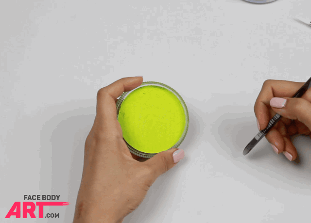
Animace: Aktivace barvy a nabírání štětcem
Lekce 2: Nabírání barvy houbičkou
1. Postříkejte barvu vodou.
2. Postříkejte houbičku. Otáčejte houbičkou mezi dlaněmi, aby se vlhkost rovnoměrně rozložila. Houbička by měla být vlhká, ale když ji stisknete, neměla by z ní vytékat žádná voda.
3. Ponořte jeden konec houbičky do barvy a posouvejte houbičku po celém povrchu, dokud barva v nádobce nevyschne. Vaše pohyby by měly být sebevědomé.
- Houbička by měla klouzat po barvě, ale odpor ke konci nabírání znamená, že jste dosáhli správné konzistence.
- Pokud bude barva v nádobce stále mokrá, když houbičku sundáte, znamená to, že máte na houbičce také příliš mokrou barvu.
- Pokud cítíte odpor během nabírání, znamená to, že v barvě nemáte dostatek vody.
4. V případě potřeby postup opakujte.

Animace: Nabírání barvy houbičkou
Lekce 3: Konzistence barvy
Pro dosažení nejlepších výsledků ve face paintingu je důležité rozumět tomu, jak se barva chová a jaké efekty lze s ní vytvořit v závislosti na použité konzistenci. Informace a dovednosti získané v tomto modulu vám pomohou porozumět podstatě různých designů v budoucnu.
Vodová konzistence
Tato konzistence barvy skvěle funguje pro vytváření stříkanců, kapek a potékaní, které se většinou používají pro vytváření stříkající a tekoucí krve. Pokud tuto konzistenci ještě více zředíte, můžete s ní také malovat stíny.
Inkoustová konzistence
Funguje perfektně pro linky s černou nebo jakoukoli jinou tmavou barvou. Tato konzistence umožňuje táhnout barvu na dlouhou vzdálenost a mít na koncích linek pěkné ostré špičky. Hustota barvy by měla být mírně vodovější než krémová konzistence.
Krémová konzistence
Toto je nejpoužívanější konzistence barvy, protože uvolňuje z barvy celou její živost. Je obzvláště důležitá pro linky s bílou voskovou barvou, stejně jako pro případy, které vyžadují silné krytí jinými barvami.
Lepivá konzistence
Charakteristická pro voskové barvy díky vosku, který dává ten lepivý efekt. Hustota barvy je mírně sušší než krémová konzistence a skvěle funguje pro tažení jedné barvy přes druhou (ne úplně blendování, ale vypadá podobně) a také pro práci se šablonami.
Suchá konzistence
Tato konzistence je mírně sušší než lepivá a je charakteristická pro glycerinové barvy (protože nemají lepivou voskovou složku). Tato konzistence je perfektní pro blendování a lze ji použít i pro práci se šablonami. Pokud se necítíte pohodlně při práci v takzvané technice „suchého štětce" s barvami na obličej, zkuste použít lisované pudry nebo oční stíny.
Suchou konzistenci lze také získat z krémové — jak je ukázáno v příkladu výše s blendovaným obrysem křídla. Nejprve jsem nanesla krémovou barvu, nechala ji trochu zaschnout a pak vytáhla trochu barvy blendovacím štětcem. Tato technika se nazývá „dry brushing" (suchý štětec).
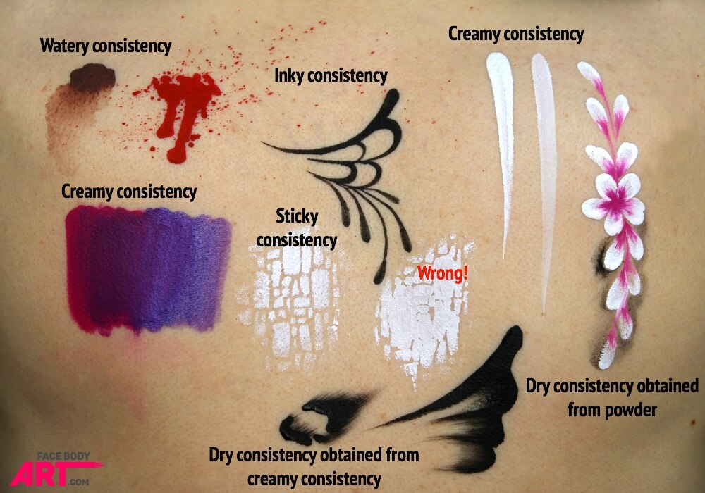
Přehled konzistencí barvy — od vodové po suchou
Video: Práce s různými konzistencemi barvy
Modul 2 — Technika kulatého štětce. Hlavní typy linek ve face a body paintingu.
Nabírání kulatého štětce, zvládnutí linek, vyvážené rozmístění, úkol a rozbor chyb
Lekce 1: Nabírání kulatého štětce
Linky jsou základní dovedností, kterou by se face painter měl pokusit zvládnout. Ostré, přesné linky vytvořené snadno a rychle vyžadují spoustu praxe a bude vám nějaký čas trvat, než jich dosáhnete. Ale nic není nemožné, zvláště pokud přesně víte, co dělat a jak to dělat.
V tomto modulu vás naučím, jak procvičovat linky nejefektivnějším způsobem a dosáhnout výsledků rychle. Doporučuji procvičovat linky každý den — všimnete si, jak rychle se zlepšíte.
Pro jasné a ostré bílé linky je velmi důležité používat krémovou konzistenci barvy a voskové barvy. Nejlepší značky bílé jsou podle mého názoru: Wolfe FX, Diamond FX, Kryvaline, PartyXplosion, Face Paints Australia.
Pokud už máte nějaké zkušenosti s face paintingem, pravděpodobně víte, že bílá se může někdy stát lepivou. To se obvykle stává v podmínkách vysoké vlhkosti a vysoké teploty. Ale mám trik, jak se tomu vyhnout a mít vždy krásně fungující bílou.
V podstatě potřebujete kráter uprostřed barvy. Když budete barvu postřikovat vodou a pak ji aktivovat rotačními pohyby kolem kráteru, získáte potřebnou aktivovanou barvu shromážděnou v malé kalužince v kráteru. Změnou množství přidané vody můžete dosáhnout různé konzistence barvy.
Proč je to tak důležité? Protože veškerá voda, kterou budete k barvě přidávat, se shromáždí v tom kráteru, na povrchu plastu. Plast nepohltí žádnou vodu z vaší aktivované barvy a budete moci pracovat déle bez opětovné aktivace pokaždé, když potřebujete nabrat štětec.
Naopak, pokud budete pracovat z rovného povrchu barvy, pokaždé když ji postříkáte, vezmete aktivované množství shora, ale přebytečná voda proteče dolů do vnitřní části barvy. Ta voda se nebude moci odpařit a bude barvu zvlhčovat, dokud se nepřemění v tu lepivou hmotu, kterou nikdo z nás nemá rád.
Proto si vždy udělejte kráter uprostřed nové bílé barvy, než začnete malovat. K tomu obvykle skvěle funguje konec rukojeti štětce.
Když máte požadovanou konzistenci barvy, naberte štětec rotací (otáčením štětin) na barvě. Ujistěte se, že celé štětiny jsou potaženy barvou až k objímce.
Video: Nabírání kulatého štětce a aktivace barvy
Lekce 2: Zvládnutí linek
Podívejme se, co byste měli dělat pro dosažení pěkných, ostrých a jasných linek. Zaměříme se více na práci s bílou, protože to je nejčastěji používaná barva pro linky ve face paintingu a je také nejlepší barvou pro procvičování na kůži.
Tečky
Pro malování shluku teček musíte kulatý štětec silně nabrat barvou a držet ho přísně kolmo k pokožce, jemně přitlačit na štětiny. Změnou tlaku můžete dosáhnout různých velikostí teček. Pokud vaše tečky nemají zaoblené okraje, znamená to, že úhel není přísně kolmý, štětec není dostatečně nabraný, nebo tlačíte příliš silně.
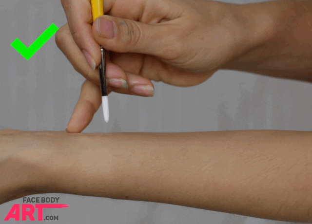
Správné držení — kolmo k pokožce
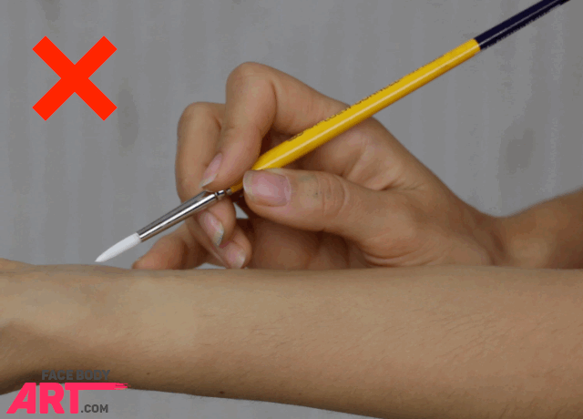
Špatné držení — šikmý úhel
Slzičky a spirálky
Pro slzičky a spirálky musí být váš štětec také přísně kolmý k pokožce. Nejpříjemnější efekt ve face paintingu je dosažen, když vaše linky mají ostré konce (nebo alespoň jeden konec) a silná tělíčka.
Klasická slzička: Přitlačte štětec na pokožku, táhněte, postupně zvedejte během tažení a uvolněte. Váš koncový pohyb musí napodobovat letadlo, které vzlétá.
Obrácená slzička: Očistěte špičku štětce několika švihy, pak začněte pohybem, který napodobuje přistávající letadlo. Postupně přidávejte tlak při tažení štětce a zakončete položením celých štětin na pokožku, přitlačte a zastavte.
Spirálky: Začněte z vnější zaoblené strany spirály, držte štětec kolmo, táhněte ho a malujte půlkruh, pak postupně uvolněte tlak a zakončete ostrou špičkou stejným pohybem jako u klasické slzičky.
Linka tenká-tlustá-tenká: Začněte malováním klasické slzičky, postupně uvolněte tlak, pak znovu přidejte tlak a udělejte tlustou linku, pak opět uvolněte a opět přitlačte. To je skvělé cvičení pro trénink schopnosti ovládat ruku.
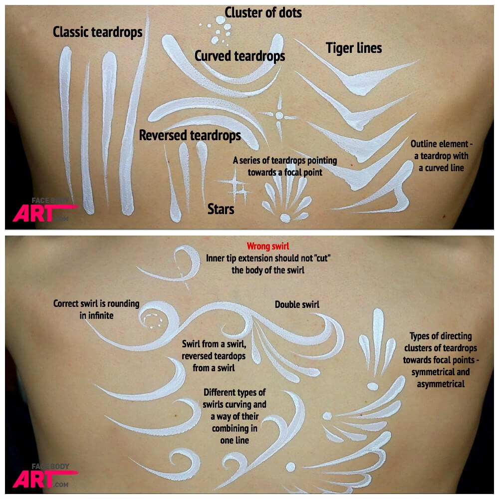
Hlavní linky: klasická slzička, obrácená slzička, tenká-tlustá-tenká, spirálka, dvojitá spirálka, tygří linka
Doporučuji dělat linky co nejdelší. Pokud procvičujete na předloktí, použijte jeho dlouhou stranu a dělejte linky od zápěstí až k loktu. To vám pomůže procvičit stabilitu ruky.
Jednou ze zvláštností face paintingu je nutnost malovat na svislé plochy. A to není tak snadné, pokud jste předtím neměli žádnou zkušenost s vertikálním malováním. Proto doporučuji procvičovat vertikální malování co nejvíce.
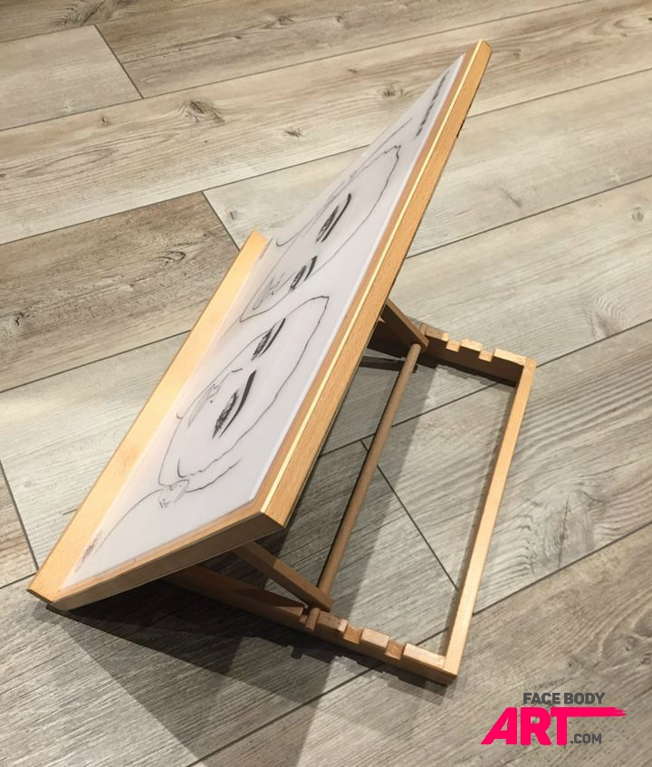
Cvičná deska na stojanu — nápad studentky Carly Schwind
Pokud chcete dosáhnout ohromujících výsledků v krátkém čase, podívejte se na sadu šablon pro linky (Linework Templates), kterou jsem vyvinula speciálně pro studenty International Face Painting School. Vytiskněte šablony, vložte je pod průhlednou cvičnou desku a kopírujte linky ze šablony kulatým štětcem č. 5 s bílou barvou.
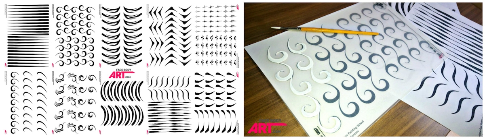
Šablony pro procvičování linek od IFPS
Video: Praktická ukázka — zvládnutí linek
Lekce 3: Vyvážené rozmístění linek na obličeji
Zde je několik tipů, které vám pomohou dosáhnout vyváženého rozmístění linek na obličeji:
- Shluky slziček vypadají nejlépe v lichém počtu (obvykle 3, 5 a někdy 7).
- Každá linka musí směřovat k ohniskovému bodu (focal point).
- Velikost záleží! V symetrických kompozicích udělejte největší linku uprostřed a postupně zmenšujte velikost doplňkových linek. Pro asymetrické designy začněte největší slzičkou a zmenšujte velikost ostatních linek v měřítku.
- Pro dosažení vyvážené symetrické kompozice malujte linky střídavě — vlevo, pak vpravo. To vám pomůže lépe cítit proporce.
- Udržujte stejnou šířku negativního prostoru mezi linkami.
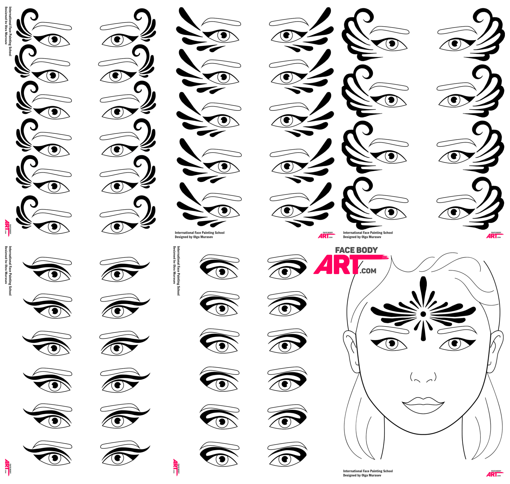
Vyvážené rozmístění linek na obličeji — směr k ohniskovým bodům
Sada šablon „Linework on the Face Templates" vám pomůže trénovat svalovou paměť pro umisťování a směrování linek k ohniskovým bodům. Vytiskněte šablony, vložte pod průhlednou cvičnou desku a kopírujte linky kulatým štětcem č. 5 s bílou barvou.
Video: Rozmístění linek na obličeji — praktická ukázka
Lekce 4: Úkol — Design ze spirálek a slziček
Teď, když rozumíte základům krásných linek, je čas je použít v praxi zkopírováním tohoto jednoduchého designu.
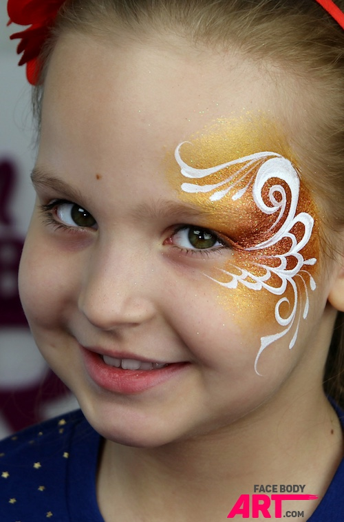
Ukázkový design ze spirálek a slziček
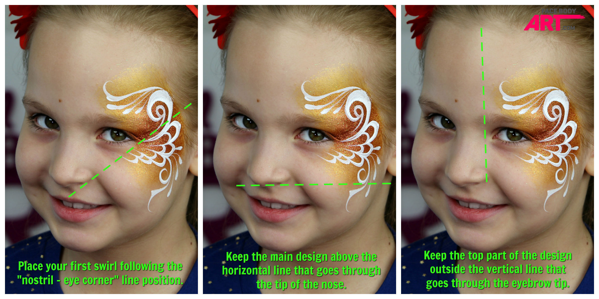
Tipy pro vyvážené proporce vašeho designu
Použité materiály:
- Kulatý štětec Kingart 7950 č. 3
- Žlutá houbička
- Barva Wolfe
- Barva Cameleon Oscar Gold
- Barva TAG Old Gold
- Barva Cameleon Pure White
- TAG holografický glitr
- Puffer-lahvička na glitr
Video: Krok za krokem — design ze spirálek a slziček
Lekce 5: Rozbor hlavních chyb
V této sekci probereme nejčastější chyby při práci s kulatými štětci. Pečlivě analyzujte každou z nich a přemýšlejte o tom, jaké chyby jste udělali vy a jak je můžete opravit.
Technika
Čím delší, tím lepší. Žádní krátcí červíci! 😜 Pokud procvičujete slzičky na předloktí nebo stehně, umisťujte je podélně, ne napříč. Vyhněte se krátkým švihům — ty vám nepomohou natrénovat nic. Je důležité trénovat stabilitu ruky, abyste byli schopni malovat dlouhé, rovné slzičky s tlustými začátky a ostrými špičkami.
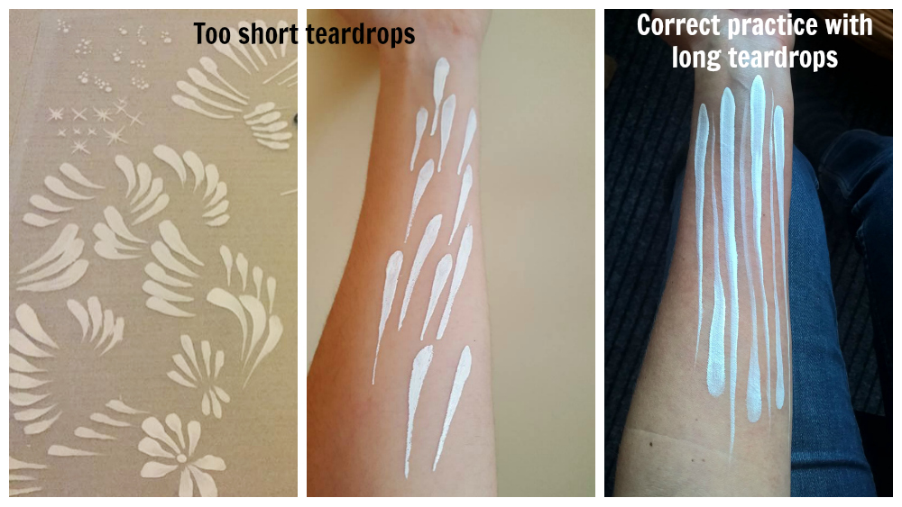
Delší linky = lepší trénink stability ruky
Správný štětec a konzistence barvy. Profesionální kvalitní štětce učiní procvičování linek radostí. Využijte doporučení z tohoto modulu a vybavte svůj kit nejlepšími kulatými štětci. Voskové barvy fungují nejlépe pro bílé linky.
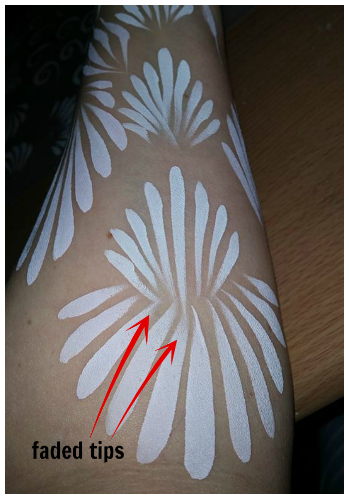
Pokud jsou špičky slziček suché a vybledlé — barva je příliš suchá nebo neotáčíte štětec dostatečně
Trénujte spirálky ve shlucích tvořících sigmoidální linku. Spojujte spirálky v souvislou sigmoidální linku a vyhněte se přerušeným linkám, které protínají shluk a narušují harmonii.
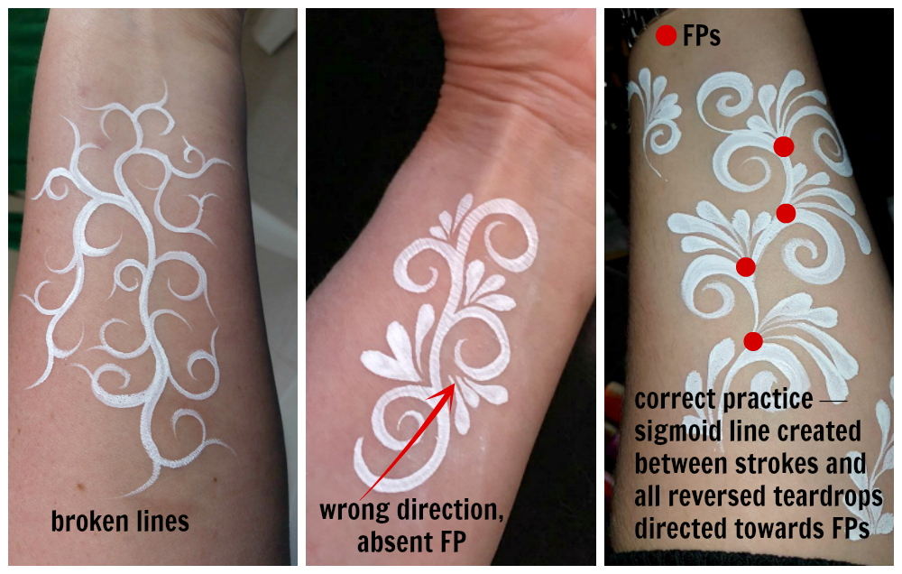
Spirálky spojené v souvislou sigmoidální linku
Měňte tlak na štětec. Vaše linky budou vypadat jemně a pěkně, pokud budou kombinovat tlusté a tenké čáry spolu s ostrými špičkami. Aplikujte větší tlak na střední část spirálek pro tlustší čáry a menší tlak na začátku a na konci pro ostré špičky.
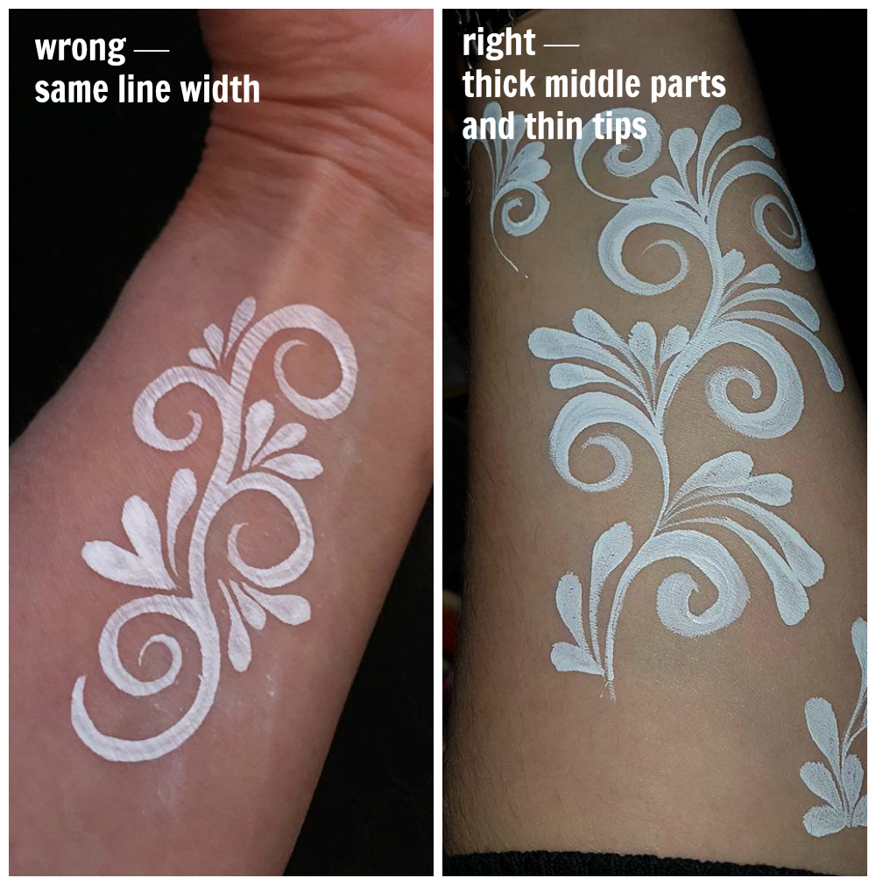
Kombinace tlustých a tenkých čar s ostrými špičkami
Analýza designů
Efektivní procvičování! Před malováním designu na obličej ho procvičte na rovné ploše. Pomůže vám to zvládnout tahy, naučit se design a cítit proporce.
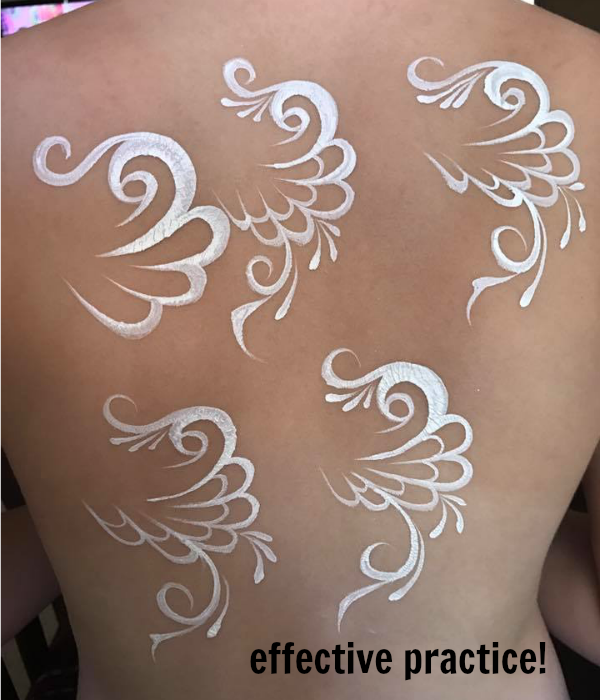
Procvičujte design na rovné ploše před malováním na obličej
Měňte tlak a udržujte všechny špičky ostré. Tupé špičky nikdy nevypadají dobře. Pamatujte, že každá vaše linka — ať už slzička nebo spirálka — by měla mít tlusté tělíčko a ostrou špičku.
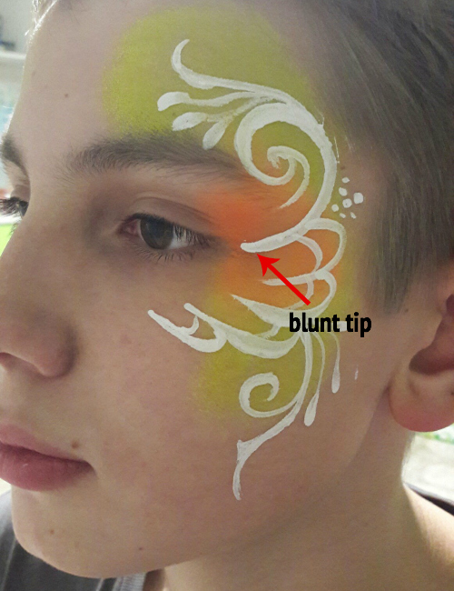
Všechny špičky musí být ostré — tupé nikdy nevypadají dobře
Blíže k oku, ale soustředěné na jeho vnější část. Malování velkých designů rozložených po celém obličeji je častá chyba mnoha začátečníků. Její příčinou je nedostatek smyslu pro proporce. Menší oční design bude vypadat femininněji a jemněji. Proto doporučuji nejprve procvičovat designy na rovné ploše. Oční designy vypadají na obličeji vyváženě, když rámují oblast spánku a vnější část oka, aniž by šly příliš blízko k vnitřní části.
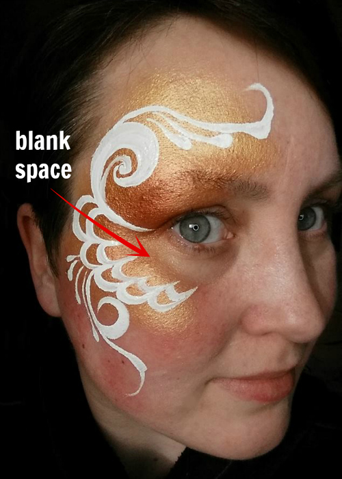
Oční design — rámujte spánek a vnější část oka
Začněte od největšího tahu a postupně zmenšujte. Je důležité měnit jak velikost tahů, tak velikost negativního prostoru v asymetrických designech. Začněte největším tahem (spirálka, slzička, smyčka atd.) a přidávejte další tahy, postupně je zmenšujte a zužujte negativní prostor.
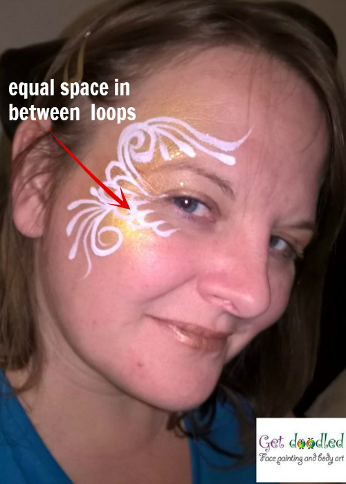
Od největšího tahu postupně zmenšujte velikost i negativní prostor
Zvolte správný směr ke správným ohniskovým bodům. V tomto konkrétním designu se směr smyček postupně přesouvá od ohniskového bodu vnějšího koutku oka k ohniskovému bodu vnitřního koutku. Obrácené slzičky dole také míří k ohniskovému bodu vnějšího koutku oka. Další ohniskový bod by zničil kompozici — proto doporučuji vyhnout se jeho vytváření.
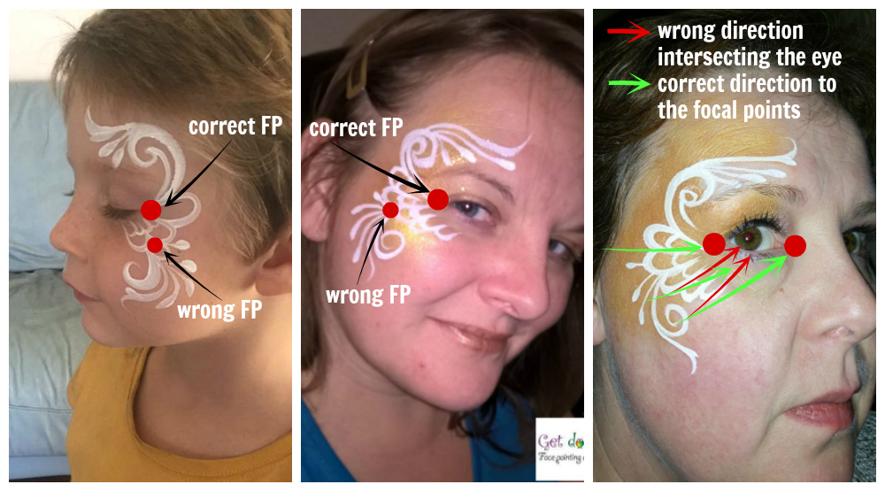
Správný směr linek ke správným ohniskovým bodům
Modul 3: Technika Double Dip
Lekce 1: Materiály
V tomto modulu se naučíte techniku Double Dip (dvojité namočení), která umožňuje vytvářet dvoubarevné okvětní lístky a další prvky na jeden tah štětce. Tato technika je oblíbená pro svou rychlost a efektní výsledky.
🖌️ Štětec Flora
Pro techniku double dip doporučuji používat štětce Flora od značky Loew Cornell. Tyto štětce mají silné, pevně elastické štětiny střední délky a ideální tvar pro tuto techniku. Další vhodnou volbou jsou štětce Cameleon s podobnými vlastnostmi.
Doporučené štětce:
- Loew Cornell 795 №6 — hlavní štětec pro květiny a okvětní lístky
- Loew Cornell 795 №3 — pro shluky teček a menší prvky
- Cameleon №4 — alternativní volba pro listy a okvětní lístky
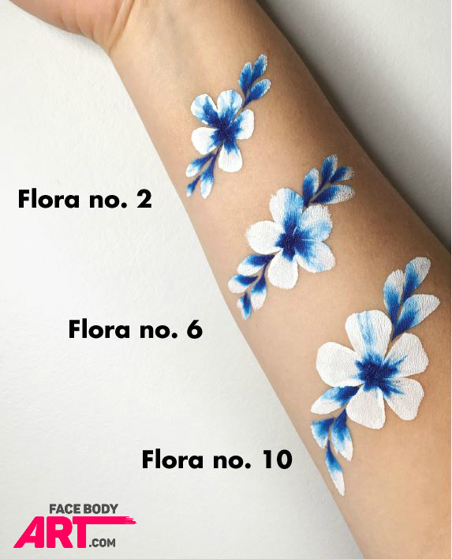
Porovnání velikostí okvětních lístků s různými štětci Flora
🎨 Barvy
Pro double dip techniku potřebujete dva typy barev:
- Základní barva (bílá) — Cameleon Pure White — nejprve naberete na celý štětec
- Druhá barva (barevná) — nanáší se pouze na špičku štětce
Obě barvy musí mít krémovou konzistenci. Barvy nesmí být příliš řídké ani příliš suché. Krémová konzistence je klíčem k úspěšné double dip technice.
Lekce 2: Zvládnutí technik double dip a triple dip
1. Nabrání barvy na štětec
Nejprve namočte štětec do bílé barvy a dobře ho naberte — otáčejte štětcem v barvě, abyste pokryli všechny štětiny rovnoměrně. Poté špičku štětce ponořte do druhé (barevné) barvy. Musíte špičku téměř „zabořit" do barvy, abyste získali dostatečné množství pigmentu na špičce.
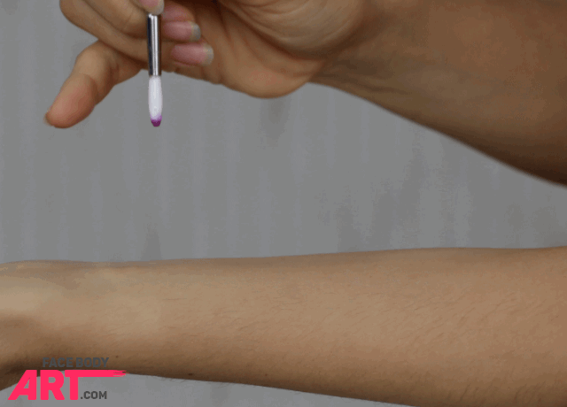
Správné nabrání barvy — nejprve bílá, pak barevná špička
2. Okvětní lístky květin
Držte štětec kolmo k pokožce a přitlačte na štětiny. Štětiny by se měly rozevřít do vějířovitého tvaru. Položte pouze polovinu štětce a pomalu jej zvedněte, abyste vytvořili hladký okvětní lístek s barevnou špičkou a bílou základnou.
Dva typy okvětních lístků:
- Tučné (široké) lístky — štětec držte kolmo, pevně přitlačte a položte jen polovinu. Vytvoří široký lístek s plochým koncem.
- Dlouhé (úzké) lístky — štětec přitlačte a táhněte, postupně zvedejte. Vytvoří protáhlý elegantní lístek.
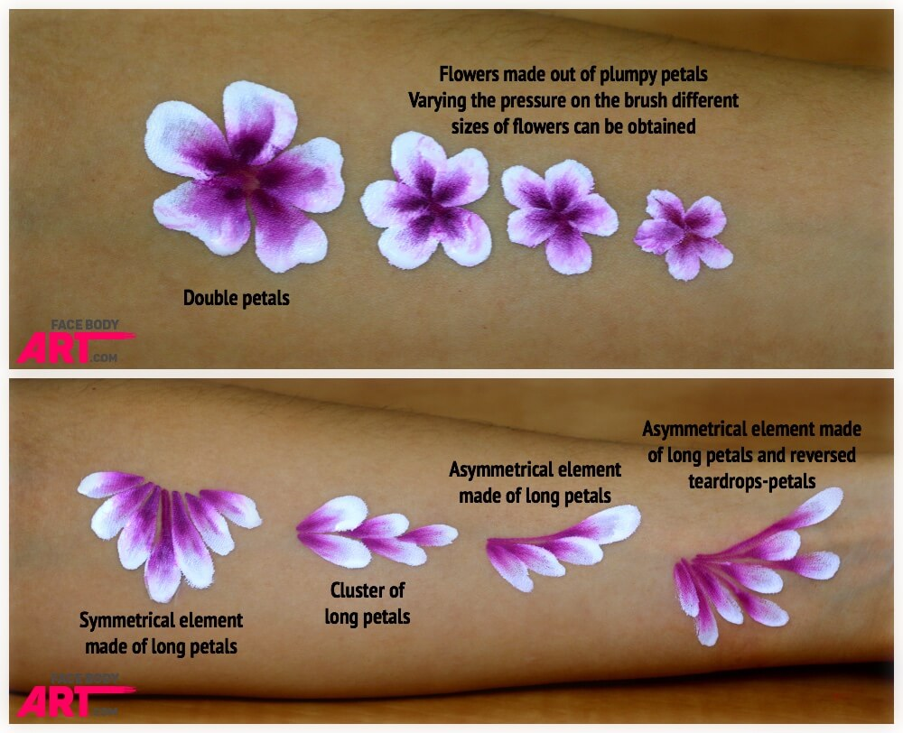
Různé typy okvětních lístků vytvořených technikou double dip
3. Srdcové okvětní lístky
Pro srdcové tvary vytvořte dva tučné lístky vedle sebe tak, aby se špičkami dotýkaly. Nakloňte štětec mírně do strany pro každý lístek, aby vznikl tvar srdce. Tato variace je skvělá pro květiny s pěti lístky.
4. Shluky okvětních lístků
Shluky se skládají z dlouhých úzkých lístků uspořádaných v řadě. Začněte největším lístkem a postupně zmenšujte, až skončíte jedním nejmenším lístkem. Lístky umísťujte do šachovnicového vzoru, kde každý mírně vyčnívá nad předchozí.
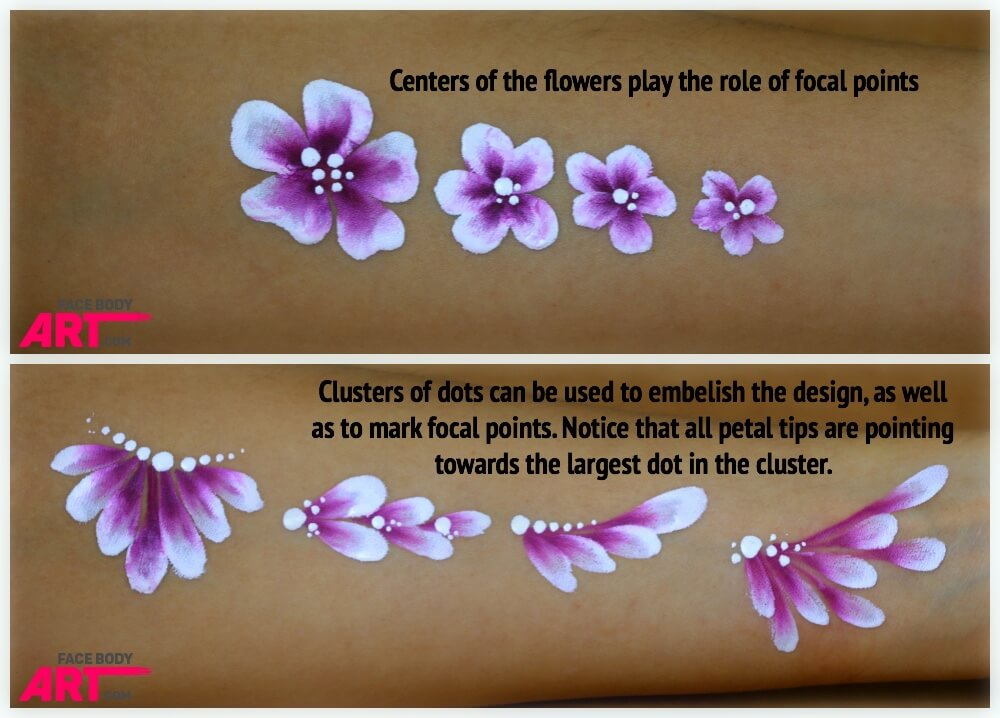
Shluky lístků doplněné tečkami a hvězdičkami
5. Obrácené slzičky
Obrácené slzičky v technice double dip vytvoříte stejným způsobem jako klasické slzičky, ale začínáte tlustým koncem (plným přítlakem) a končíte tenkou špičkou. Barva na špičce štětce se tak objeví na širokém konci slzičky.
6. Triple dip (trojité namočení)
Triple dip je pokročilá variace, kde na štětec naberete tři barvy. Postup: naberte první barvu na celý štětec, druhou barvu na horní dvě třetiny a třetí barvu pouze na špičku. Výsledkem jsou okvětní lístky s třemi barevnými přechody.
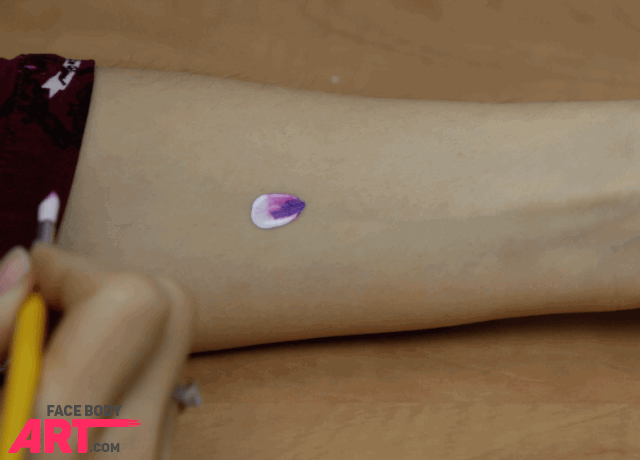
Triple dip — tři barvy na jednom štětci
7. Dobíjení štětce
Když vám dojde barva, nemusíte začínat celý proces od začátku. Stačí znovu nabrat bílou barvu a poté druhou barvu na špičku. Štětec mezi tím nečistěte ani nesušte. Čím více budete malovat, tím rychlejší bude vaše dobíjení.
Video: Demonstrace techniky double dip
Video: Double dip v praxi
Lekce 3: Úkol — Design z double dip okvětních lístků
🎨 Design z double dip okvětních lístků
Zde je příklad, jak lze techniku double dip využít k vytvoření celého designu. Tento konkrétní design je tak rychlý a jednoduchý, že ho zvládnete namalovat do 2 minut. Výsledek ale rozhodně udělá dojem na vaše klienty!
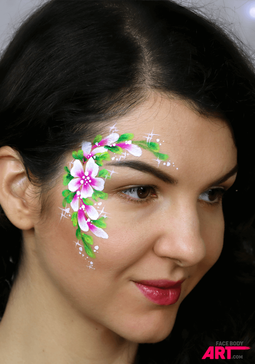
Kompletní design vytvořený technikou double dip
🚩 Materiály:
- Kulatý štětec Loew Cornell 795 №6 — pro květiny
- Kulatý štětec Loew Cornell 795 №3 — pro shluky teček a hvězdiček
- Kulatý štětec Cameleon №4 — pro listy (nebo jakýkoli jiný tuhý štětec s krátkými štětinami a ostrou špičkou)
- Barva Cameleon Pure White
- Barva Global Magenta — pro středy květin
- Barva Global Light Green — pro listy
- Barva TAG Green — pro listy
Video: Krok za krokem — kompletní design z double dip okvětních lístků
Shrnutí
Technika double dip je snadná na zvládnutí, když znáte správné postupy, a je jednou z prvních lekcí, které učím studenty na osobních workshopech. Jakmile si tuto dovednost osvojíte, budete ji rádi používat velmi často. Rychlé a krásné květiny potěší téměř každého, takže postupujte podle kroků, které jsem vám poskytla, a užijte si výsledek!
Lekce 4: Rozbor častých chyb
V této části si rozebereme nejčastější chyby, které se při malování technikou double dip objevují, a také si povíme, jak je opravit a jak se jim vyhnout. Pozorně analyzujte informace níže a porovnejte je se svou prací. Jaké chyby jste udělali a jak je můžete napravit?
1. Správný štětec a konzistence barvy
Double dip téměř jako žádná jiná technika vyžaduje správné nástroje a jejich správné používání. Doporučuji používat štětce a barvy doporučené v tomto modulu a vyhýbat se jiným materiálům, zejména neprofesionálním, protože vás to může stát spoustu úsilí, ale výsledek bude stále neuspokojivý.
- Používejte štětce s tlustými, pevně elastickými štětinami střední až krátké délky.
- Štětce s tenkými a dlouhými štětinami budou na kůži „tancovat" a neumožní vám vytvořit výrazné lístky.
- Používejte krémovou konzistenci barvy jak pro bílou (první barvu), tak pro druhou barvu.
- Špičku štětce musíte téměř „zabořit" do druhé barvy, abyste získali dostatečné množství pigmentu.
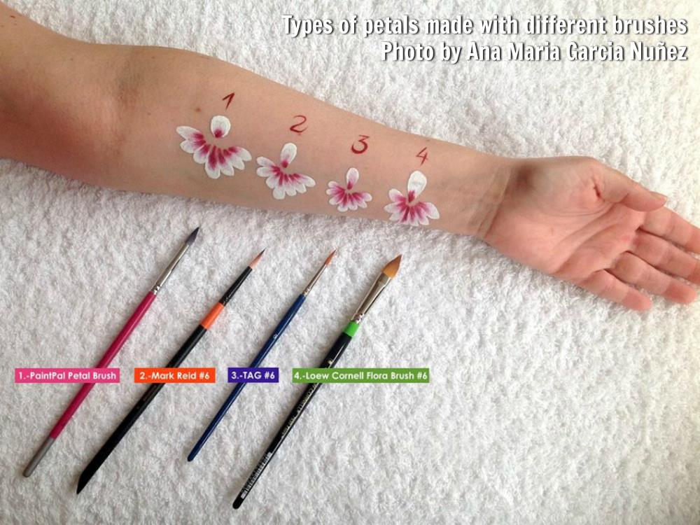
Správný štětec a konzistence barvy pro double dip
2. Tučný lístek je hlavním cílem praxe
Většina face painterů snadno zvládne dlouhé lístky. Záludná část přichází, když je třeba namalovat tučné (široké) lístky. Pamatujte, že budete potřebovat oba typy lístků — vyvážené kompozice se často dosahuje kombinací těchto dvou typů. Tučné lístky se používají v květinách, dlouhé ve shlucích.
Pro tučný lístek: držte štětec přísně kolmo k pokožce, pevně přitlačte na štětiny a položte jen polovinu. Střed štětin by se měl rozevřít do vějířovitého tvaru a lístek by měl mít spíše plochý konec než zaoblený.
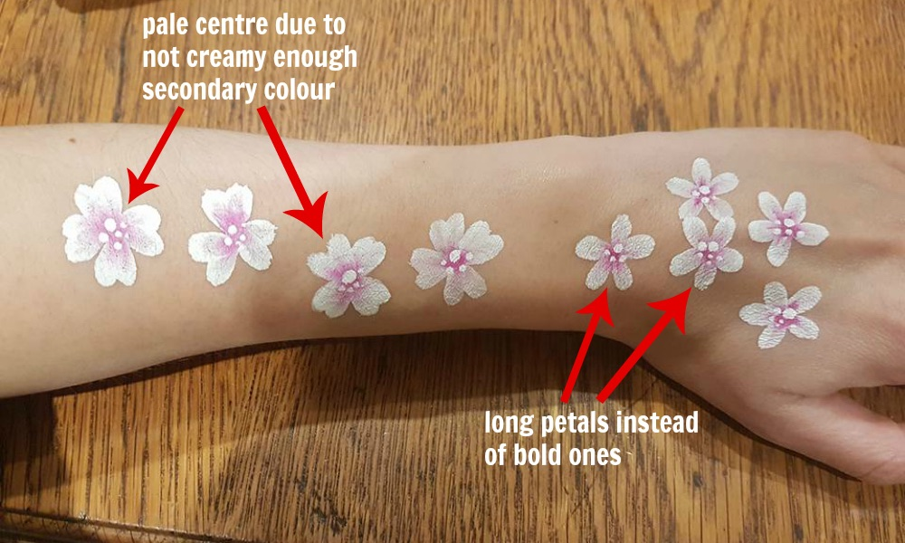
Rozdíl mezi tučným a dlouhým okvětním lístkem
3. Zvolte správnou velikost
Vyhněte se malování příliš velkých nebo příliš malých kompozic. Kulatý štětec №6 obvykle funguje nejlépe pro dosažení kompozice správné velikosti.
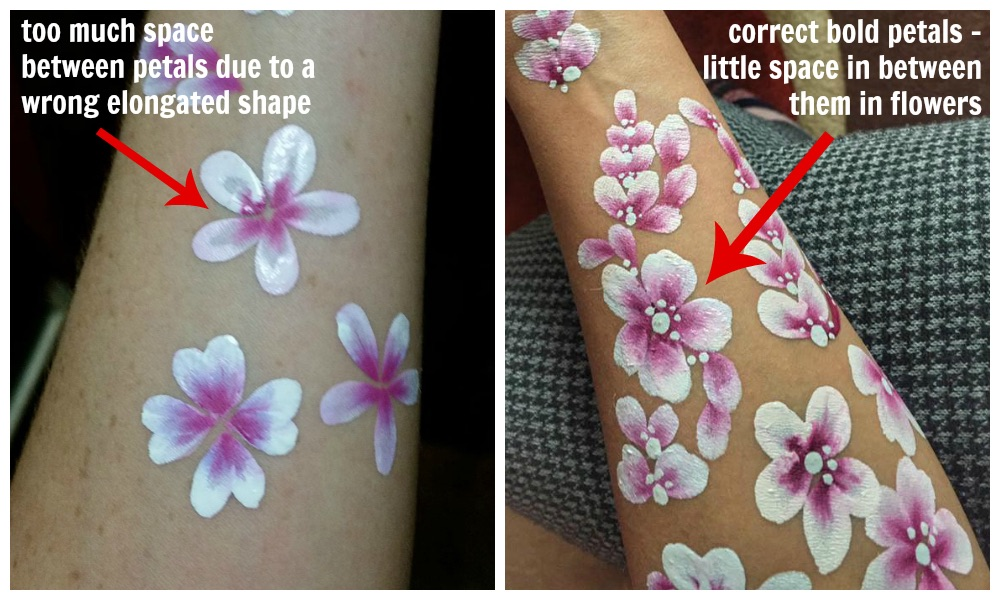
Správná velikost kompozice
4. Přizpůsobte tok květin pomocí listů
Mějte na paměti, že vyvážené kompozice dosáhnete pouze tehdy, když bude v designu plynulost (tok). Tokem myslíme umísťování prvků stejným směrem nebo jemné změny směru, když je to potřeba, bez ostrých prvků.
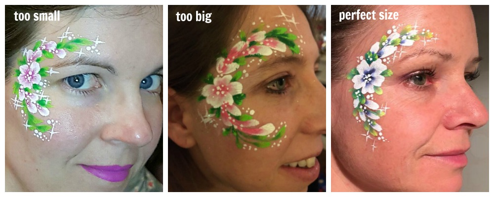
Plynulý tok kompozice s listy
5. Najděte střed kompozice a zarámujte ho menšími prvky
Každá kompozice by měla mít svůj střed. To je největší prvek — v našem případě největší květina umístěná uprostřed spánkové oblasti. Všechny ostatní prvky by měly postupně zmenšovat svou velikost od středu a končit jedním malým detailem (lístek, list, shluk teček).
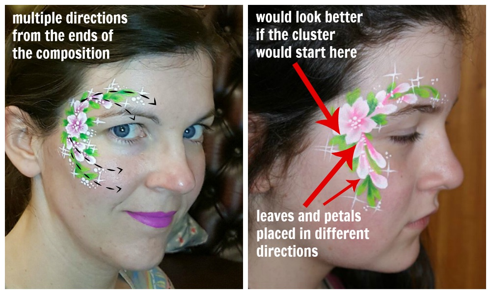
Střed kompozice zarámovaný menšími prvky
6. Zvládněte shluky
Shluky vypadají nejlépe, když jsou lístky umístěny v šachovnicovém vzoru, kde jeden prvek mírně vyčnívá oproti předchozímu. Je také zásadní, jak propojíte shluky s květinami: najděte mezeru mezi dvěma lístky a začněte první lístky shluku z ní. Začněte většími lístky a postupně zmenšujte jejich velikost, shluk zakončete jedním nejmenším lístkem.
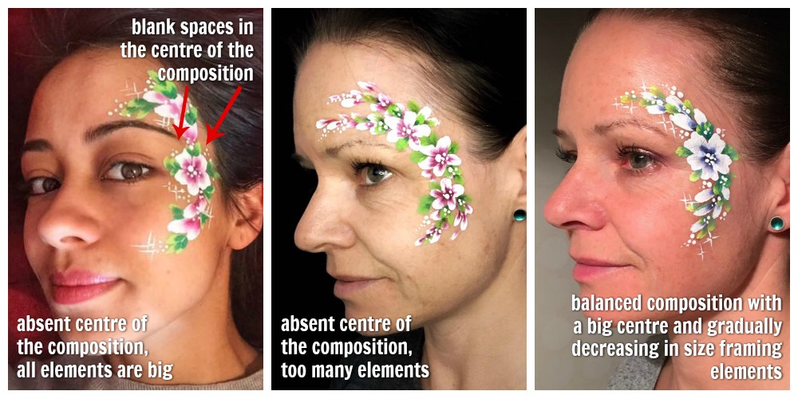
Správné uspořádání shluků
7. Vyhněte se zhušťování lístků
Nestavte lístky příliš blízko k sobě, protože jinak se vaše květina může proměnit v neuspořádaný kruh. Nechte mezi lístky dostatek prostoru.
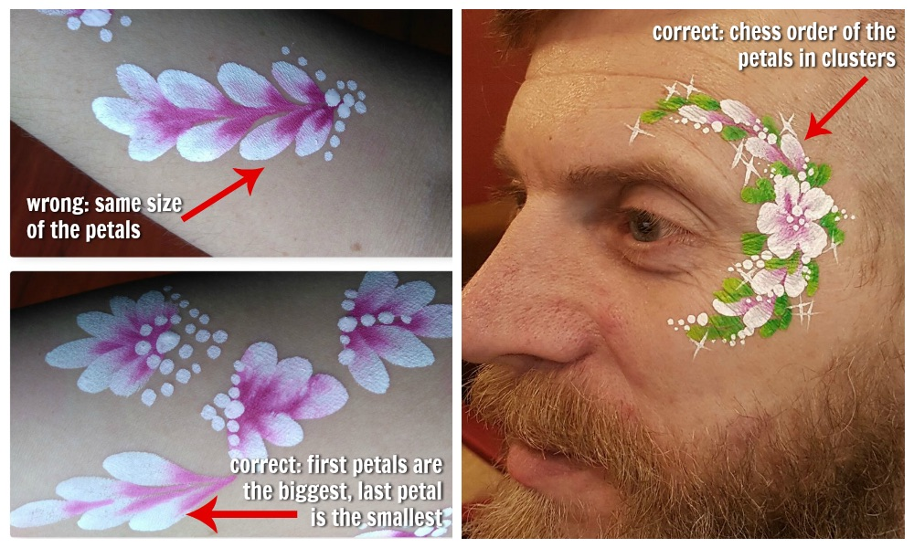
Nenechte lístky příliš blízko u sebe
8. Umístěte kompozici podle ohniskových bodů
O teorii ohniskových bodů budeme podrobně mluvit ve třetí části kurzu. Nicméně považuji za nutné zmínit pár slov již zde, abyste měli základní představu o správném umístění designu.
Při malování designu na spánek se ujistěte, že směřujete ke dvěma hlavním ohniskovým bodům: centrálnímu a bradovému. Střed kompozice v tomto konkrétním designu je umístěn v ohniskovém bodě spánku.
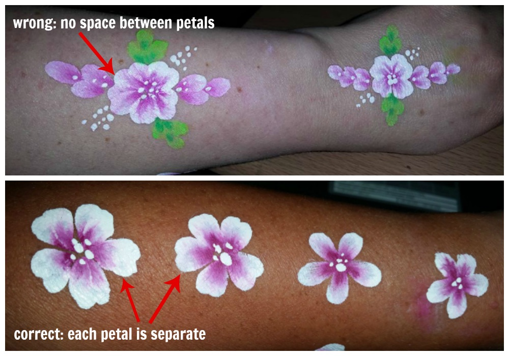
Umístění kompozice podle ohniskových bodů
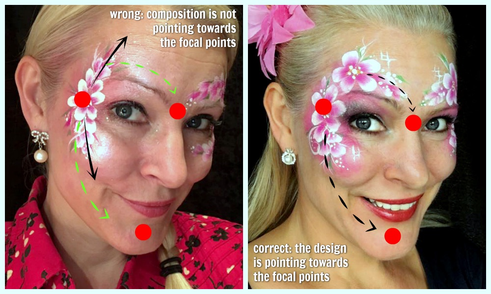
Ohniskové body na obličeji
Lekce 5: Webinář — Konzistence barvy a Double Dip
🎥 Webinář: Konzistence barvy a Double Dip
V tomto webináři se probírají následující otázky:
Konzistence barvy:
- Jak pracovat s bílou barvou na akcích po celé hodiny, aby nezaschla?
- Co dělat se starou zaschlou barvou, zejména pokud potřebujete dosáhnout krémové konzistence?
- Jak aktivovat split-cake, abyste získali rovnoměrné barvy (ne suché a ne příliš vodové)?
Double Dip:
- Jak zvládnout tučné okvětní lístky?
- Srdcové lístky a květiny s pěti lístky — jak je všechny vměstnat do květiny a vyhnout se prázdnému místu uprostřed?
- Je možné vytvořit double dip s perleťovými barvami?
- Jak rychleji dobíjet štětec?
Webinář: Konzistence barvy a Double Dip
Modul 4: Technika One Stroke — Práce se split-cakey
Lekce 1: O technice one stroke
One stroke je speciální technika, při které umělec používá plochý štětec nabraný dvěma nebo více barvami. Efekt je okamžitý a velmi působivý. Tato technika byla původně používána v akrylové dekorativní malbě, například na nehtových dekotacích a v lidovém umění.
Můžeme říci, že face painteři tuto myšlenku převzali a vytvořili speciální split-cakey, které představují pruhy různých barev uspořádané v nádobce a navržené tak, aby se současně nabíraly na plochý štětec (běžný plochý, šikmý nebo i filbert štětec).
O této technice jsme poprvé hovořili v Části první, Modulu 3. Split-cakey jsou kostky barvy, které obsahují více než jednu barvu, což umožňuje nabrat více barev na jeden štětec nebo houbičku a nanést je technikou „one stroke".
Split-cakey se vyrábějí:
- Ve velkých nádobkách (čtvercových, obdélníkových nebo kulatých) — pro práci s houbičkou i štětcem
- V malých úzkých nádobkách — pro práci se štětcem
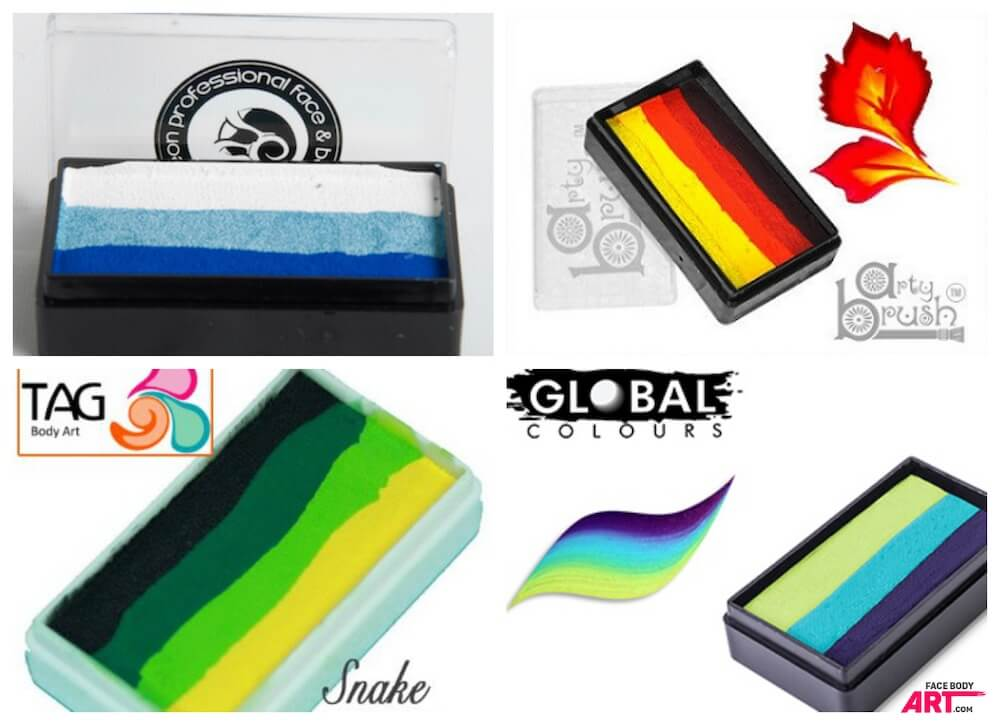
Příklady malých split-caků
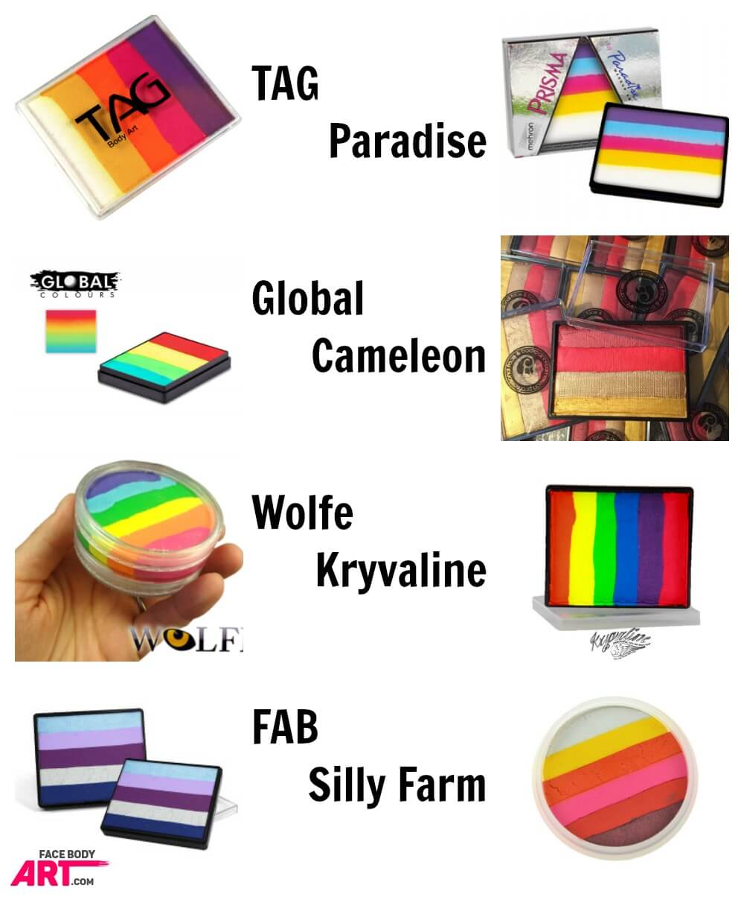
Příklady velkých split-caků různých značek
Lekce 2: Práce s velkým split-cakem
Pomocí houbičky a velkého split-caku lze během několika sekund vytvořit různé působivé barevné přechody. Tato technika se často používá na motýlí křídla, různé masky, tygry, kočičky a mnoho dalšího. Jakýkoli velký split-cake bude fungovat, nicméně doporučuji věnovat pozornost houbičce, kterou budete používat. Podle mého názoru zde nejlépe fungují houbičky střední hustoty s malými póry (o tom jsme mluvili v Části první, Modulu 6).
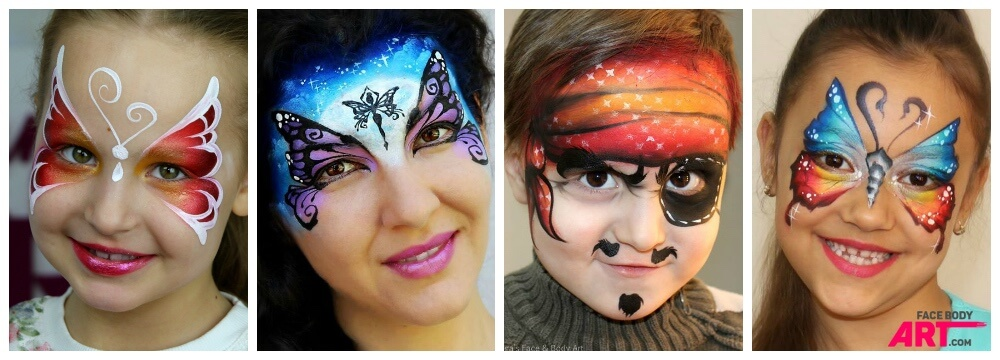
Příklady designů vytvořených houbičkou se split-cakem
Postup krok za krokem:
1. Aktivace barvy: Postříkejte split-cake několika dávkami vody ze sprejové lahvičky. Povrch se zvlhčí, což znamená, že barva je aktivovaná. Některé barvy, zejména nové, vyžadují více vody k aktivaci. Ale přidání příliš mnoha vody najednou může způsobit vytékání a míchání barev. Proto doporučuji nový split-cake postříkat jednou, nechat minutu aktivovat a poté postříkat znovu.
2. Příprava houbičky: Navlhčete houbičku postříkáním vodou a pak ji proválajte mezi dlaněmi, aby se vlhkost rovnoměrně rozprostřela. Pozor — když houbičku stisknete, nesmí z ní nic kapat!
3. Nabrání barvy: Položte houbičku přes barvy na jednom konci split-caku a pak ji táhněte tam a zpět po povrchu. Houbička by měla po barvě klouzat. Pokud cítíte odpor, znamená to, že nemáte dostatek vody v barvě — postříkejte ji znovu.
4. Nanášení: Položte houbičku na kůži a nanášejte barvu tečkovacími pohyby. Tvar a barvy nanášené na kůži můžete měnit částečným zvedáním a stlačováním houbičky.
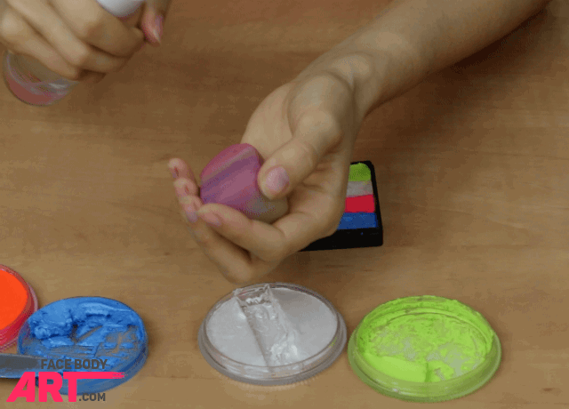
Demonstrace práce s houbičkou a velkým split-cakem
Lekce 3: Práce s malým split-cakem
Materiály
Nejširší plochý štětec ve face paintingu má šířku 1 palec (2,5 cm). Tento štětec nabere všechny barvy z běžného one stroke split-caku. Štětec ¾ palce nabere ¾ barev, ½ palce nabere polovinu barev atd.
Výběr split-caků
Při nákupu split-caků věnujte pozornost kombinacím barev. Ačkoli výrobci obvykle vytvářejí krásné kombinace, občas narazíte na nevhodnou kombinaci. Viděla jsem například split-cake, který měl pruh žluté hned vedle pruhu fialové. Tyto barvy jsou komplementární a jsou na opačných stranách barevného kola — vedle sebe vytvářejí krásný kontrast, ale při smíchání vznikne nepořádek.
Důležitý je také počet pruhů ve split-caku. Nejlépe fungují split-cakey se 3 až 4 barvami, kde je dostatek prostoru pro jemný přechod. Nedoporučuji používat split-cakey s více než 4 barvami, protože je velmi obtížné nabrat štětec tak, aby se všechny barvy nanesly rovnoměrně.
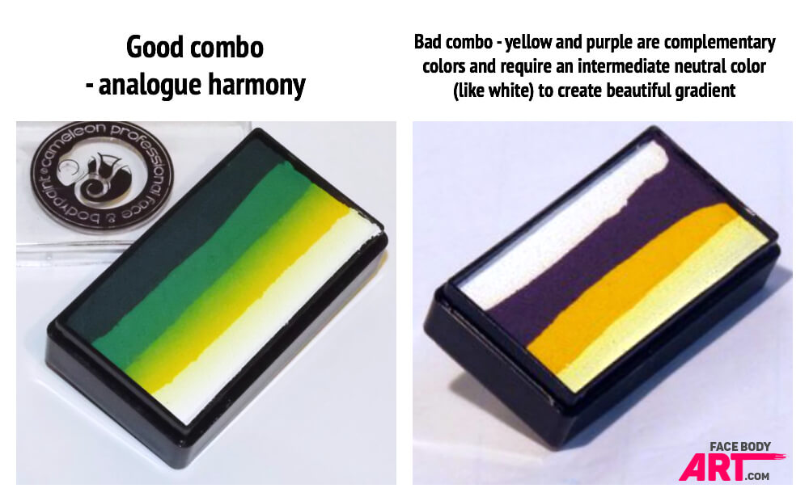
Správné vs. špatné kombinace barev ve split-caku
Štětce pro one stroke
Jakýkoli kvalitní plochý štětec bude fungovat skvěle. Může to být běžný plochý štětec, šikmý (angled) štětec nebo dokonce filbert štětec. Plochý štětec potřebujete pro klasickou techniku one stroke, zatímco šikmé a filbert štětce lze použít pro dosažení speciálních efektů.
Osobně ráda používám šikmé štětce pro většinu svých one stroke prací, protože ostrý hrot mi umožňuje snadněji manipulovat se štětcem a vytvářet detailní tvary. Nicméně plochý štětec také používám, když potřebuji klasické tahy.

Ploché štětce pro one stroke

Šikmé (angled) štětce pro one stroke
Nabírání barvy a malování
1. Postříkejte split-cake vodou. Buďte velmi přesní s množstvím vody! Obvykle stačí jedno až dvě postříkání k navlhčení povrchu barvy, který musí být lesklý, ale nesmí na něm být přebytečná voda.
Pokud jste přidali příliš vody, zvedněte stranu split-caku s světlejším pruhem na okraji a nechte přebytečnou vodu stéci na opačný okraj. Tmavší barvy z protější strany překryjí světlejší aktivovanou barvu. Nebo jednoduše otřete split-cake vlhčeným ubrouskem po délce.
2. Ponořte štětec do vody a přejeďte jím po okraji nádobky, abyste vytlačili přebytečnou vodu. Položte štětec přes pruhy barvy a poté ho posouvejte po celém povrchu split-caku tam a zpět. Snažte se nabrat štětec co nejvýše — alespoň polovina délky štětin by měla být pokryta barvou. To vám umožní malovat déle bez dobíjení.
Štětec by měl po povrchu snadno klouzat. Pokud cítíte odpor, znamená to, že potřebujete přidat více vody. Pokud se všechny barvy smíchají v jednu hmotu, přidali jste příliš vody nebo musíte štětec nabírat opatrněji.
Video: Nabírání barvy z malého split-caku a technika one stroke
Lekce 4: Hlavní tahy v technice one stroke
Pro zvládnutí techniky one stroke se nejprve musíte naučit základní tahy. Teprve poté, co se budete cítit jistě při vytváření každého z nich, budete připraveni tyto dovednosti aplikovat při tvorbě celých one stroke designů.
Hlavní tahy v technice one stroke:
- Duha (Rainbow)
- Stuha (Ribbon)
- Slzička (Teardrop)
- Úzká barevná linka (Narrow colorful line)
- Lístek ve tvaru V (V shape petal)
- Zvlněný lístek ve tvaru V (Corrugated V shape petal)
- Ostrý list ve tvaru V (Sharp V shape leaf)
- Zvlněný list ve tvaru V (Corrugated V shape leaf)
- Ostrý lístek na základu V (Sharp petal on V shape basis)
- Jednoduchá květina (Simple flower)
- Základ poupěte růže — tah ve tvaru „n" a tah ve tvaru „u"
- Další lístky růže (Additional rose petals)
- Celé poupě růže (Entire rose bud)
- Rozkvetlá růže (Blooming rose)
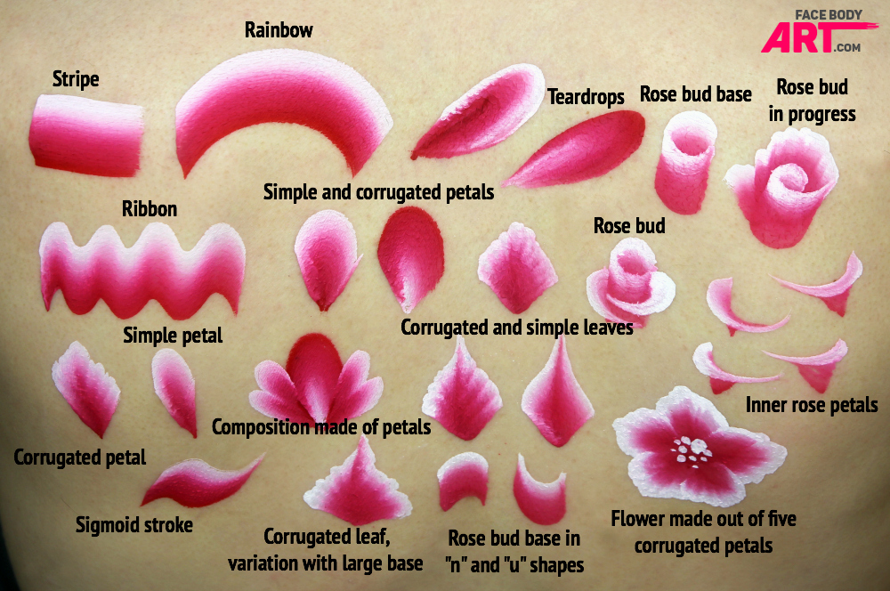
Přehled hlavních tahů v technice one stroke
Video: Demonstrace všech hlavních tahů one stroke
Lekce 5: Růže technikou one stroke
Toto téma vyžaduje samostatný popis a instrukce. Nejprve si zopakujme prvky, ze kterých se skládá one stroke růže:
- Základ poupěte růže — tah ve tvaru „n" a tah ve tvaru „u"
- Další lístky růže
- Celé poupě růže
Existuje mnoho různých stylů a technik malování one stroke růží. Téměř každý umělec má svůj vlastní přístup. Ukážu vám techniku, kterou jsem vyvinula po více než 3 letech praxe. Podle mého názoru se snadno učí a výsledek je velmi působivý.
Uspořádání listů
Všimněte si, jak jsou listy uspořádány. Protože rostou ze stonku, při pohledu na růži shora vidíte jen jejich špičky nebo alespoň polovinu jejich délky. To znamená, že při malování byste měli vytvářet velké základy a ostré špičky.
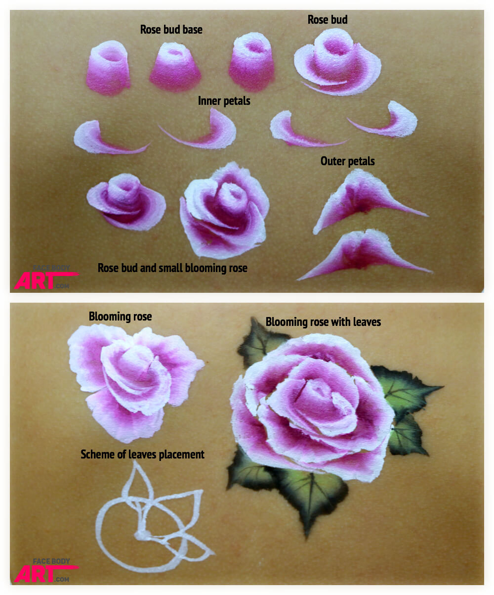
Přehled tahů pro vytvoření one stroke růže
Materiály
Budete potřebovat střední šikmý štětec, běžnou bílou barvu a dva split-cakey — jeden pro lístky a druhý pro listy.
Video: Malování růží technikou one stroke krok za krokem
Lekce 6: Úkol — Design růží one stroke
Než začnete vytvářet tento design, doporučuji procvičit tyto hlavní tahy, dokud se nebudete cítit jistě u každého z nich:
- Základ poupěte růže — tah ve tvaru „n", tah ve tvaru „u"
- Vnitřní lístky
- Celé poupě růže — základ + dva vnitřní lístky
- Rozkvetlá růže — základ + dva vnitřní lístky + 2–3 vnější lístky
- Listy
- Rozkvetlá růže s listy
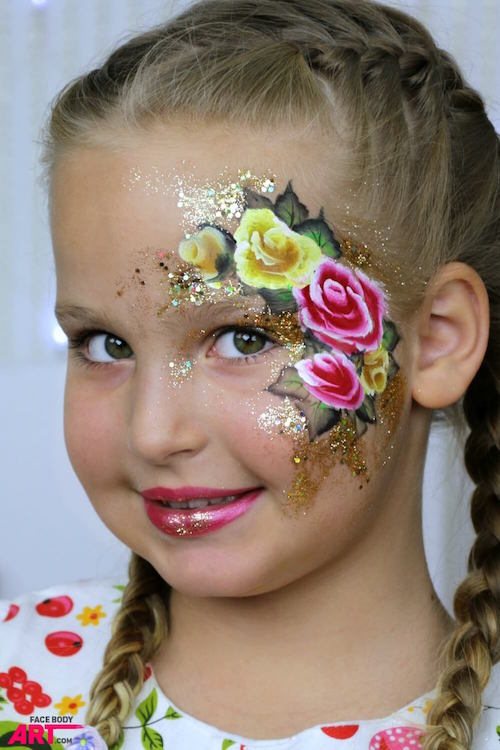
Kompletní design růží technikou one stroke
🚩 Materiály:
- Šikmý štětec Loew Cornell Angled 793 3/8 — pro lístky (alternativa — šikmý štětec TAG №6)
- Šikmý štětec Loew Cornell Angled 793 1/2 — pro listy (alternativa — šikmý štětec TAG №4)
- Split-cake Cameleon Gypsy — pro červené růže
- Barva Global Yellow — pro žluté růže
- Barva TAG Old Gold — pro žluté růže
- Barva Cameleon Pure White — pro namočení špičky šikmého štětce
- Split-cake Cameleon Peacock — pro listy (alternativa — kombinace zlaté, neonově zelené a černé)
- Barva TAG Neon Green — pro listy
- Barva TAG Pearl Red — pro rty
- Třpytkový gel Glitter Mark Mehron — použit jako lepidlo pro nalepení hrubých třpytek (alternativa — jakýkoli kosmetický gel, např. gel na vlasy)
- Zlaté hrubé třpytky Sugar Glitter od Shawna Del Real
Video: Kompletní design růží one stroke — krok za krokem
Shrnutí
Split-cakey a one stroke techniky bezpochyby výrazně usnadnily práci face paintera. Krásné designy lze vytvořit za krátký čas s významným efektem. Jako každá technika, kterou jsme se dříve naučili, i tyto barvy vyžadují určitou zručnost a praxi pro dosažení nejlepších výsledků.
Možná vám přišly náročné při prvním pokusu. Pokud ano, nezoufejte. Prostě postupujte podle mých instrukcí a zkoušejte dál. Čím více zkušeností budete mít s prací s nimi, tím snadnější proces bude. Existuje tolik kreativních způsobů, jak zahrnout split-cakey do vašich designů, že se rozhodně vyplatí vytrvat!
Modul 5: Práce s filbert a blending štětci
Lekce 1: O filbert a blending štětcích
Filbert a chisel (plochý zkosený) štětce se dodávají v různých velikostech a typech štětin. Jak si možná vzpomínáte, v Části první, Modulu 6 jsme zdůrazňovali, jak důležité je vybrat si kvalitní profesionální štětce pro dosažení nejlepších výsledků. Za roky praxe jsem vyzkoušela mnoho různých filbert a chisel štětců a ráda doporučuji značky: TAG, Loew Cornell, Mehron a Cameleon.
Chisel štětce mají kratší štětiny a to je v podstatě jediný rozdíl mezi nimi a filbert štětci.
Blending štětce vyrábí značka Cameleon ve dvou velikostech — malý a velký blending štětec. Tyto štětce jsou perfektní, když potřebujete:
- Rychle vyplnit plochu — velmi snadné s velkými štětci, použitelné jak ve face paintingu, tak v body paintingu
- Vybudovat tvar, zejména se zaoblenými okraji (kruh, ovál, srdce, mrak atd.)
- Malovat velké slzičky — snadno dosáhnete ostré špičky na konci otočením štětce a zakončením na jeho ostré straně
- Blendovat a vytvářet objem — provádí se s krémovou a lepkavou konzistencí barvy
- Dry brushing (suché kartáčování) — technika podobná blendování, ale pigmenty se nemíchají, pouze se vrství přes sebe nebo přes kůži
- One stroke — protože filbert štětce jsou ploché, lze je použít i pro one stroke tahy. Skvěle fungují pro dvoubarevné slzičky nebo budování tvarů
- Double dip — filbert štětce lze použít i pro double dip, všimněte si rozdílu ve tvaru okvětních lístků
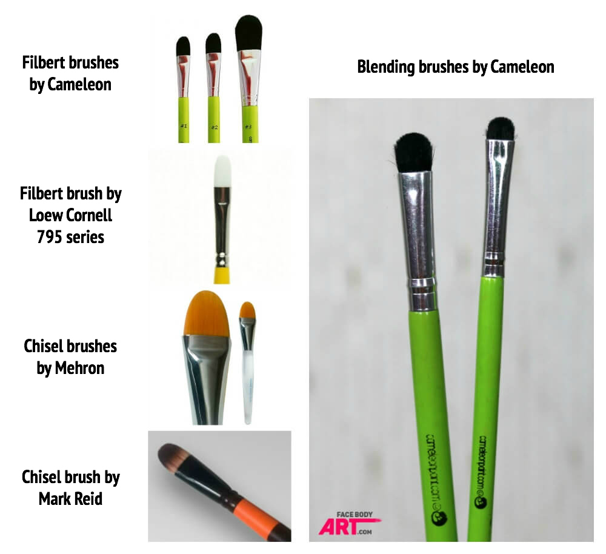
Přehled filbert a blending štětců
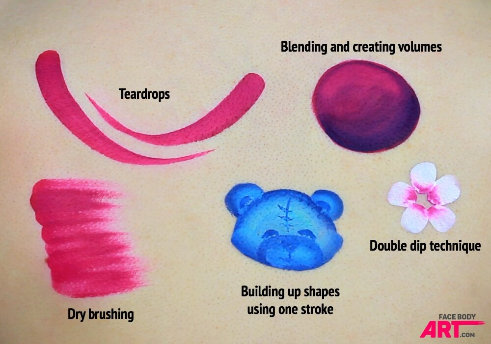
Různé tahy vytvořené filbert štětcem
Video: Demonstrace práce s filbert a blending štětci
Lekce 2: O barvách pro blendování a technika blendování štětcem
Definice blendování říká, že jde o plynulý přechod mezi dvěma barvami, kde obě lze na okrajích identifikovat. Pokud jste tedy začali blendovat například červenou do žluté a skončili s oranžovou, blendování bylo neúspěšné.
Které barvy se blendují nejlépe?
Nejlépe se blendují barvy s měkkou texturou — glycerinové barvy a voskové metalické barvy. Můj trik pro snazší blendování běžných voskových barev je kombinovat je v designu s měkkou barvou. Smíchání běžné voskové barvy a voskové metalické barvy může také zjednodušit blendování.
Dva typy blendování:
- Klasické blendování — barvy se míchají mezi sebou a vytvářejí přechodové odstíny
- Dry brushing (suché kartáčování) — jedna barva se přetahuje přes druhou nebo přes kůži
Klasické blendování
Pokud chcete blendovat dvě nebo více barev, existuje několik způsobů:
Blendování čistým štětcem: Ponořte čistý štětec do vody, pak odstraňte přebytečnou vlhkost přitlačením štětin na ubrousek. Když vidíte, že se štětiny rozvětvují, váš štětec je připraven k blendování.
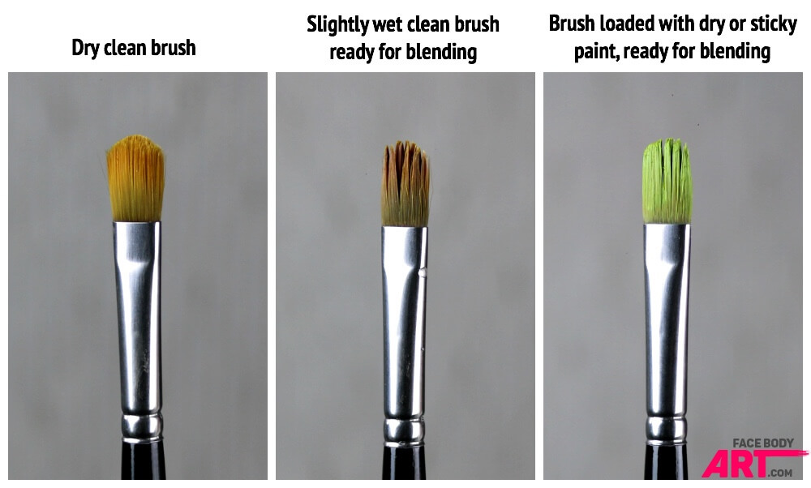
Štětec připravený k blendování — štětiny se rozvětvují
Blendování s barvou: Naberte štětec krémovou nebo lepkavou barvou. Můžete ho použít přímo k blendování (to obvykle dělají zkušení umělci, protože rychle cítí konzistenci barvy). Pokud se blendování teprve učíte, doporučuji otřít vnější vrstvu barvy a ujistit se, že se štětiny rozvětvují stejně jako v prvním případě.
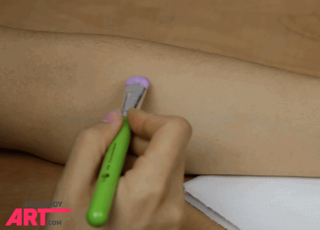
Blendování dvou barev štětcem
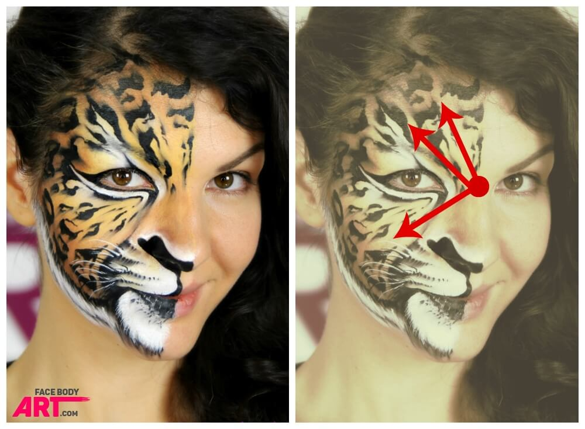
Směr blendování sleduje tvar — příklad leoparda
Lekce 3: Dry brushing (suché kartáčování)
Dry brushing lze provádět buď filbert (chisel) štětci, nebo blending štětci. V tomto případě se pigmenty nemíchají, ale vrství se přes sebe nebo přes kůži.
Jak to funguje
Jednu barvu přetáhnete přes druhou. Mějte na paměti, že konzistence barvy musí být buď krémová, nebo lepkavá!
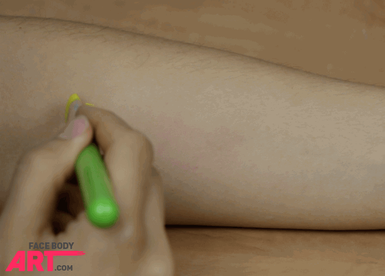
Správné dry brushing — jedna barva přetažená přes druhou
Častá chyba
Zde je jedna z častých chyb, kterou lidé dělají při dry brushingu:
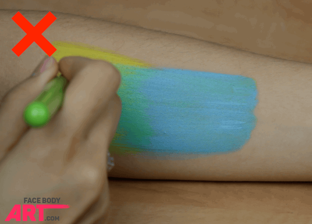
Častá chyba při dry brushingu
Video: Dry brushing pro blendování zvířecích vzorů a obrysů motýlů
Lekce 4: Technika blendování houbičkou
Při blendování houbičkou je zásadní používat malé množství vody. Naneste dvě barvy vedle sebe na kůži a tečkujte okraj mezi nimi, dokud nedosáhnete pěkného jemného přechodu.
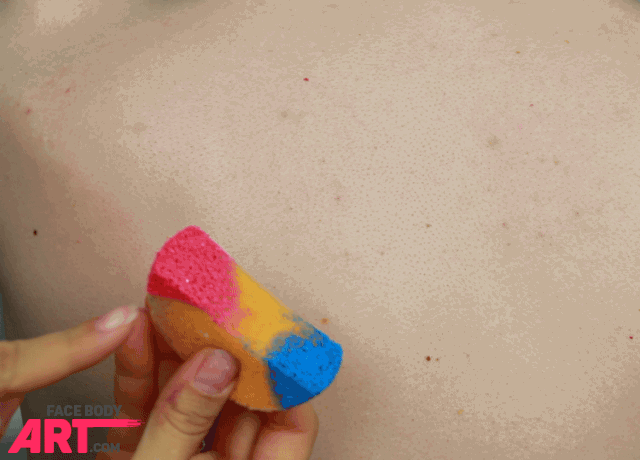
Blendování dvou barev houbičkou
- Blendujte okraj světlejší barvou z vybraného barevného páru, protože tmavší barva může překrýt světlejší a ztížit blendování.
- Zkuste také použít zadní stranu houbičky — funguje skvěle zejména když jsou barvy příliš vlhké. Čistá a suchá zadní strana houbičky dokáže absorbovat přebytečnou vodu a pomoci blendovat barvy.
Shrnutí
Blendování lze dosáhnout štětcem nebo houbičkou. Nejčastěji se používá k vytvoření objemu a také k hladkému přechodu z jedné barvy do druhé. Pro dosažení příjemného výsledku se ujistěte, že vaše barva má správnou konzistenci — a pamatujte, že praxe dělá mistra!
Modul 6: Práce s houbičkami. Kabuki štětec.
Lekce 1: O face paintingových houbičkách
Stejně jako štětce jsou i houbičky na face painting dostupné v různých tvarech a velikostech. Typ pěny, její hustota a pórovitost jsou také faktory ovlivňující výsledný efekt. Technika práce s houbičkami se liší podle stylu umělce.
Klasifikace podle hustoty:
- Měkké houbičky — osobně je nerada používám, protože si pokaždé ušpiním prsty, když houbičku s barvou stlačím.
- Houbičky střední hustoty — nejběžnější typ, vyrábí je TAG, Mehron, Diamond FX a další značky. Mám zelené houbičky Mehron a jsou mé №1 oblíbené.
- Husté houbičky — znám zatím pouze jednu značku, která vyrábí vysoce husté houbičky — černé houbičky Kryvaline.
Klasifikace podle pórovitosti:
- S malými póry — husté houbičky Kryvaline, perfektní pro šablonování.
- Se středními póry — obvykle střední hustoty, skvělé pro nabírání barvy ze split-caku.
- Pórovité houbičky — žluté houbičky od Wolfe FX, Diamond FX, Mehron a Cameleon. Mají střední hustotu, pojmou hodně barvy najednou a pokryjí velké plochy kůže jedním nabitím. Nicméně práce s pórovitými houbičkami na split-cacích může být záludná, protože se barvy mají tendenci příliš míchat. Místo toho je používejte pro vytváření textury, objemu nebo pro nanášení světel a stínů. Tyto houbičky jsou mé №2 oblíbené.
Klasifikace podle tvaru:
- Půlkruhové houbičky — nejběžnější tvar. Výrobci je prodávají jako kruhy, které rozříznete na dva půlkruhy, nebo již rozříznuté. Snadno se drží a používají a mají různé strany pro různé účely.
- Okvětní (petal) houbičky — mají tvar okvětního lístku, vyrábí je Paint Pal, AWA, Ruby Red a další. Skvělé pro vytvarování motýlích nebo pohádkových křídel. Pro začátečníky je vřele doporučuji — pomohou vám přizpůsobit správnou velikost křídel na dětský obličej. Mé №3 oblíbené houbičky.

Různé typy houbičet na face painting
Detailní popis houbičet a jejich vlastností
Lekce 2: Práce s houbičkami
Nabrání barvy na houbičku
1. Postříkejte barvu vodou.
2. Postříkejte houbičku vodou. Otáčejte houbičkou mezi dlaněmi pro rovnoměrné rozprostření vlhkosti. Houbička by měla být vlhká, ale když ji stisknete, nesmí z ní vytékat žádná voda.
3. Ponořte jeden hrot houbičky do barvy a posouvejte ji po celém povrchu, dokud barva v nádobce nebude suchá. Vaše pohyby by měly být sebevědomé. Houbička by měla po barvě klouzat, ale odpor na konci nabírání znamená, že jste dosáhli správné konzistence.
4. Opakujte postup, pokud je to nutné.
Nanášení barvy na kůži
Houbičky se ve face paintingu nejčastěji používají pro rychlé pokrytí velkých ploch kůže, vytváření textury a blendování barev pozadí. Běžné barvy se lépe nanášejí tečkovacími pohyby na kůži. Můžete si nejprve obrysovat požadovaný tvar, ale doporučuji dokončit tečkovacími pohyby pro rovnoměrný nátěr.
Techniky nanášení barvy houbičkou
Průsvitné vs. syté pozadí
Pro průsvitné pozadí zkuste používat světlejší barvy a míchejte běžné barvy s metalickými nebo nanášejte metalické samostatně. Světlé barvy jako zlatá, metalická žlutá, metalická modrozelená a metalická světle zelená lze použít jak pro syté, tak průsvitné pozadí — obojí vypadá skvěle, záleží na požadovaném efektu.
Tmavé barvy jako modrá, zelená a fialová se hůře nanášejí v rovnoměrných průsvitných vrstvách.
Video: Nejběžnější techniky práce s houbičkami ve face a body paintingu
Lekce 3: Vytváření textury a objemu houbičkami
Pomocí houbičet lze vytvořit různé textury jako srst, strniště, zombí kůži, modřiny, stékající krev, korodovaný kov a mnoho dalšího.
Nejlepší houbičky pro tento účel jsou ty s velkými póry — žluté houbičky a stipple houbičky pro speciální efekty. O praktickém využití každé z těchto technik budeme podrobněji hovořit ve Třetí části kurzu.
Dvě hlavní textury k procvičení:
- Efekt strniště — vytvoříte pomocí pórovité houbičky tečkovacími pohyby
- Efekt modřiny — vrstvením tmavých barev pomocí houbičky
Příklady textur vytvořených houbičkami
Lekce 4: Nanášení světla a stínu houbičkami
Jakou barvu použít pro pozadí, světlo a stín?
Výběr barvy pozadí je zásadní. Doporučuji používat barvy střední intenzity (červená, oranžová, světle zelená, světle modrá), abyste mohli stínovat ve dvou krocích.
Příklad dvoustupňového stínování: Chcete-li vytvořit trojrozměrný vzhled modré koule — použijte světle modrou jako pozadí, přidejte běžnou modrou jako první stín a černou jako hlavní stín. Přidejte bílou jako odlesk.
Jednokrokové stínování: Jednoduše použijte modrou jako pozadí, černou jako stín a bílou jako odlesk.
Jaká by měla být konzistence barvy?
- Pozadí: inkoustová nebo krémová konzistence
- Bílé odlesky: krémová konzistence
- Stínování: lepkavá až suchá konzistence
Práce s mírně vlhčí konzistencí je u světlých barev snadnější než u tmavých. Tmavé barvy vyžadují velmi přesnou pozornost konzistenci a snáze se používají se sušší konzistencí.
Kde je zdroj světla?
Trik pro lepší pochopení: představte si každý tvar jako geometrické těleso. Ve face a body paintingu hlavní tvary, se kterými budete pracovat, jsou: koule, válec a kužel. Každé z těchto těles má zaoblený povrch, což znamená, že světlo a stín se obvykle nanášejí v plynulém přechodu.
Jak se světlo a stín chovají na kouli
Lekce 5: Kabuki štětec a texturová SFX houbička
Kabuki štětec
Kabuki štětec je make-up štětec kulatého tvaru s krátkými, hustými a tlustými štětinami. Jeho hlavním účelem je nanášení barvy (nebo make-upu) v tenké a rovnoměrné vrstvě na velké plochy. Tento štětec je obzvláště skvělý pro jemné průsvitné, ale rovnoměrné pokrytí celé kůže obličeje, dekoltu a dokonce celého těla. Díky němu můžete kůži vypadat bledě nebo s nazelenalým nádechem.
Kabuki štětec
Demonstrace práce s kabuki štětcem
Texturová SFX houbička (stipple houbička)
Texturová SFX houbička (také nazývaná stipple houbička) je nástroj používaný pro vytváření speciálních efektů jako modřiny, strniště a všechny druhy zranění. Face painter ji obvykle potřebuje pouze jednou za rok — na Halloween.
Efekt strniště vytvořený stipple houbičkou
Shrnutí
V tomto modulu jsme se podívali na face paintingovou houbičku — skromný nástroj, přesto všestrannější, než byste na první pohled čekali. S praxí a znalostmi dokáže houbička vytvořit širokou škálu výsledků — mnohem více než pouhé pokrytí velkých ploch barvou. Houbička může vytvořit spoustu různých textur, objemů a přechodů.
Modul 7: Techniky používání šablon
Lekce 1: O šablonách
Šablony jsou vyrobeny z tenkého plastového listu (mylar) s vyřezanými vzory. Stávají se stále populárnějšími a vyrábí je všechny možné značky a face paintingové obchody. Nejpopulárnější jsou šablony BAMS od Andrey O'Donell a Graffiti Eyes Stencils od Ley Selley. Existují také šablony od Jest Paint, Planet Body Art, Terri Connoli a mnoha dalších.
Tři hlavní skupiny šablon:
- Šablony se zvířecím vzorem — leopardí skvrny, tygří pruhy apod.
- Ornamentální šablony — dekorativní vzory a ornamenty
- Šablony s finálním obrázkem — vločky, hvězdy, motýli apod.
Mnoho začínajících face painterů si myslí, že šablony mohou na začátku kariéry zjednodušit jejich práci, což není úplně pravda. Šablony mohou přidat WOW faktor mnoha designům, ale budete potřebovat speciální dovednosti práce s houbičkami a neklidnými dětmi, stejně jako dostatek času na dokončení designu.
Přehled typů šablon pro face painting
Lekce 2: Práce se šablonami
Materiály
Houbičky: Pro šablony nejlépe fungují husté houbičky s malými póry (jako černé Kryvaline), protože příliš neabsorbují barvu a drží ji na povrchu houbičky. To také pomáhá dávkovat množství použité vody. Fungují i petal houbičky od PaintPal a Mehron. Další možností jsou finger daubers (prstové aplikátory) s hladkým povrchem. Hustota houbičky je velmi důležitá — můžete dokonce použít beauty blender, protože splňuje všechny požadavky.
Barva: Základní barvy nebo split-cake.
Tipy pro nejlepší výsledky se šablonami:
- Přitlačte šablonu pevně na kůži a nehýbejte s ní, dokud neskončíte s nanášením barvy.
- Nejlepší konzistence barvy pro šablonování je lepkavá (pro voskové barvy) a suchá (pro glycerinové barvy).
- Houbičku důkladně nabijte barvou otáčením na povrchu, pak dokončete několika tečkovacími pohyby. Barva v nádobce by měla být již suchá — když zvednete houbičku, uvidíte drobné špičky na barvě, což znamená správnou konzistenci.
- Používejte tečkovací pohyby pro nanášení barvy přes šablonu — zabráníte tím zatékání pod šablonu.
- Tahovací pohyby lze použít pro suchou konzistenci barvy a mohou vytvořit průsvitný efekt, ale vyžadují více praxe.
- Pro vícebarevné pozadí nabijte houbičku one stroke kombinací z velkého split-caku.
- Držte šablonu na místě, naneste třpytky na vlhkou barvu a získáte třpytivý ornament.
Video: Demonstrace technik práce se šablonami
Shrnutí
Šablony mají face painterovi hodně co nabídnout. Můžete je použít k úspoře času (rychlé logo) nebo k okamžitému nanesení vzoru (gepardí skvrny). Ale nenechte se zmást — šablony nejsou vždy nejsnadnější volbou, zejména pro začátečníky. Jako u každé jiné techniky budete muset trénovat, abyste dosáhli nejlepších výsledků.
Modul 8: Techniky nanášení třpytek
Lekce 1: O kosmetických třpytkách
Třpytky přicházejí ve všech možných tvarech, velikostech, barvách a stupních lesku. Je na vás, které si vyberete, jen se ujistěte, že používáte výhradně kosmetické třpytky (cosmetic grade). Řemeslné třpytky (craft glitter) mohou být levnější a vypadat podobně, ale pokud se dostanou do očí, mohou poškrábat rohovku, způsobit vředy na rohovce a dokonce oslepení. Mohou také zabarvit kůži nebo vyvolat alergickou reakci.
Formy třpytek:
- Třpytkový prach (glitter dust) — v kelímcích nebo puffer lahvičkách
- Hrubé třpytky (coarse glitter) — velké částice všech tvarů (šestiúhelníky, kulaté, hvězdičky atd.)
- Třpytkový gel (glitter gel) — v kelímcích a lahvičkách
Přehled typů kosmetických třpytek
Estetická pravidla používání třpytek:
- Třpytky nanášejte jen na pozadí — vyhněte se nanášení přes linky, příliš lesku může překrýt veškerou vaši krásnou práci.
- Nejprve třpytky, pak obrys — pro super lesklé pozadí posypte třpytky z puffer lahvičky na pozadí a pak začněte obrysovat. Pomůže to i rychlejšímu zaschnutí.
- Třpytky jako součást designu — velké částice hrubých třpytek mohou přidat extra WOW faktor, ale buďte opatrní, je snadné se nechat unést.
- Barva třpytek musí odpovídat pozadí — tmavé třpytky na světlém pozadí mohou vypadat jako nečistoty.
- Nikdy třpytky na blendování! — pokud jste pracovali na 3D efektu, třpytky ho zničí.
Lekce 2: Nanášení třpytek prsty
Toto je můj oblíbený způsob nanášení třpytek. Dává potřebnou kontrolu a umožňuje nanášet třpytky na malé i velké plochy.
Ťukněte ukazováčkem nebo prostředníčkem na vlhčený ubrousek, abyste získali trochu vlhkosti, pak ho namočte do třpytek — ty se přilepí na prst díky vlhkosti. Poté jemně přitlačte prst na povrch, který chcete pokrýt třpytkami.
Tato metoda je šikovná, i když je povrch suchý — vlhkost z prstu stačí k přilepení třpytek. Osobně ráda nanáším třpytky tímto způsobem na oční víčka a rty.
Nanášení třpytek prstem
Lekce 3: Nanášení třpytek aplikátorem
Pro tuto techniku se používá speciální aplikátor-štětec podobný smoothie blenderu. Postup je stejný jako u nanášení třpytek prsty. Osobně tuto techniku ve svých pracích nepoužívám, ale viděla jsem jiné umělkyně, jako Vanessa Mendoza, jak ji používají.
Nanášení třpytek aplikátorem
Lekce 4: Nanášení třpytek štětcem
Tuto techniku lze použít, když se třpytky nanášejí na malou plochu kůže. Třpytky se přilepí pouze na povrch, který by měl být mírně vlhký (čerstvě nanesená barva nebo navlhčená kůže).
Pokud barva zaschla, můžete stále nanést třpytky štětcem tak, že ho namočíte do vody, pak do třpytek a přitlačíte na povrch. Někdy se třpytky nepřilepí okamžitě a budete muset štětcem po povrchu přejet.
Nanášení třpytek štětcem
Lekce 5: Nanášení třpytek puffer lahvičkou
Tato metoda vám umožní nanášet třpytkový prach na velké plochy kůže. Hlavní rozdíl je, že se nemusíte dotýkat kůže — třpytky se vyfouknou z puffer lahvičky. Přilepí se s menší hustotou než u předchozích metod, ale tento způsob je nejrychlejší.
Příprava puffer lahvičky:
Při otevírání nové zapečetěné lahvičky použijte ostrou jehlu a propíchněte úplnou špičku trysky. Naplňte polovinu lahvičky třpytkami, nakloňte ji vodorovně a stlačte boky. Z lahvičky by se měl uvolnit obláček třpytek nesený proudem vzduchu.
Třpytky se přilepí na kůži pouze pokud je barva stále vlhká — dejte designu pár puffnutí ihned po namalování pozadí. Pokud barva zaschla, můžete ji znovu navlhčit postříkáním vodou ze vzdálenosti 50 cm, ale buďte opatrní s jemností rozprašovače.
Nanášení třpytek puffer lahvičkou
Lekce 6: Nanášení třpytek se šablonou
Touto technikou můžete vytvořit přesné tvary a vzory z třpytek. Vytvořte vzor jako obvykle pomocí šablony a houbičky s barvou. Držte šablonu na povrchu a dokud je barva stále vlhká, naneste třpytky na vzor.
Houbička i prst fungují skvěle. Pokud dáváte přednost houbičce, doporučuji použít stejnou houbičku jako pro šablonování — namočte ji do třpytek a přeneste je na vzor. Pokud má ale houbička velké póry, třpytky se v nich mohou zaseknut navždy, takže raději použijte prst.
Tato technika vypadá obzvláště krásně na finálních šablonových obrazech jako vločky a hvězdy.
Nanášení třpytek přes šablonu
Lekce 7: Nanášení hrubých třpytek (práškových nebo gelových)
Jedním z trendových způsobů použití třpytek je nanášení hrubých částic jako součásti designu. Pro přilepení velkých částic na kůži budete potřebovat nějaké lepidlo. Jednoduchý zvlhčovač jako voda nebo gel bude fungovat, ale pokud chcete zajistit, že třpytky nespadnou z kůže po několika hodinách, použijte kosmetické třpytkové lepidlo.
Příklady kosmetických třpytkových lepidel
V ostatních případech, kdy nepotřebujete super dlouhotrvající efekt, použijte běžný kosmetický gel — gel na vlasy, třpytkový gel nebo dokonce lubrikant. Jen se ujistěte, že nemá vůni a přísady vyvolávající pocity na kůži (brnění, chlad).
Technika: Rozetřete tenkou vrstvu gelu/lepidla na oblast, kterou chcete pokrýt třpytkami, a tečkovacími pohyby prstem naneste třpytky na povrch. Můžete také nanášet předem připravenou směs gel-třpytky přímo na kůži. Tuto směs si můžete vyrobit sami smícháním třpytek s kosmetickým gelem a uložením v malém plastovém kelímku.
Nanášení hrubých třpytek
Shrnutí
Třpytky jsou nádherným doplňkem face paintingu — většina z nás jich nemůže mít dost. Nejdůležitější věc k zapamatování je vždy, VŽDY a POUZE používat kosmetické třpytky. Bezpečnost vašich klientů na tom závisí. V tomto modulu jsme probrali různé metody nanášení třpytek a tipy, jak je udržet na místě.
Modul 9: Sestavení vlastního setupu. Vybavení pro outdoorové akce.
Lekce 1: Hlavní setup a ergonomická organizace stolu
Ergonomická organizace stolu je zásadní pro udržení čistého a uklizeného pracoviště, stejně jako pro rychlejší a efektivnější práci. Organizovaný stůl navíc vypadá profesionálně. Za roky zkušeností jako aktivní face painter jsem pochopila, jak organizovat pracoviště co nejefektivněji.
Barvy
Pokud jsou vaše barvy v originálních nádobkách, jedním z řešení pro úsporu místa je kombinace dvou barev rozříznutých napůl v jedné nádobce. Jednou z nejlepších možností pro skladování a přepravu barev jsou speciální kufříky od TAG, Mehron, Kryvaline apod.
Kufříky na face paintingové barvy
Další možností skladování je přesypání barev do speciálních plastových vložek (inserts). Černé plastové vložky jsou nejpohodlnějším řešením a vypadají uklizeněji. Mají perfektní hloubku a dodávají se ve dvou velikostech — s velkými a malými přihrádkami. Barva 32 g se perfektně vejde do velké přihrádky.
Barvy přesypané do plastových vložek
Alternativní řešení — barvy fixované oboustrannou páskou na víčkách krabic
Černé plastové vložky na barvy
Štětce
Správné skladování štětců je jedním z nejlepších způsobů, jak zajistit jejich dlouhou životnost. Peněženka na štětce (brush wallet) drží štětiny v původním tvaru bez vzájemného dotýkání a může sloužit i jako stojan během práce.
Peněženky na štětce od TAG a Mehron
Jak face painteři vystavují štětce v peněženkách během akcí
Nádobka na čištění štětců
Je velmi důležité, aby nádobka nebyla průhledná — klienti by neměli vidět špinavou vodu. Nejpohodlnější nádobky jsou ty rozdělené na sekce, se žebrováním na dně a otvory pro štětce.

Specializované nádobky na čištění štětců
Nádobky na štětce na pracovních stolech
Ergonomická organizace stolu
Hlavní pravidlo: každý předmět by měl mít své vlastní místo. Často používané materiály mějte na dosah ruky, méně používané dále.
Ergonomická organizace pracovního stolu (pro praváky — leváci si uspořádání zrcadlově obraťte)
Lekce 2: Přepravní systémy
Šikovný přepravní systém — lehký, snadno přenosný a pojme celý váš face paintingový setup — je super důležitý, pokud jste aktivní face painter pracující mimo domov.
Řemeslnický kufřík
Většina mého setupu se vejde do řemeslnického kufříku, který jsem přeorganizovala jako face paintingovou stanici. Doporučuji kufříky velikosti A3 nebo mírně větší.
Příklady kufříků vhodných pro face painting
Kufr na kolečkách
Další řešení je kufr na kolečkách s teleskopickou rukojetí. Vhodné kufry lze najít ve specializovaných obchodech kdekoli na světě.
Margarita Taranina používá retro kufr
Chytré propojení kufru se skládací židlí a stolem
DJ Hero Case a kreativní řešení
Někteří face painteři přeměnili DJ Hero Case na malířskou stanici! Názory se různí — někteří si stěžují na kvalitu, jiní jsou spokojeni roky.
DJ Hero Case přeměněný na face paintingovou stanici
Profesionální malířské stanice
Lídrem na trhu je společnost Craft-N-Go (www.craftngo.com). Vyrábí profesionální vysoce kvalitní stanice ve dvou velikostech — 71 cm a 91 cm. Výhodou je, že je to nejen přepravní systém, ale kompletní stanice se stabilními nohami, speciálně navržená pro face paintery.
Profesionální stanice Craft-N-Go
Kreativní řešení — pouzdro na elektrickou kytaru přeměněné na stanici
Lekce 3: Zobrazování designů na akcích
Máte setup sbalený a desítky dětí (i dospělých) čekají. Jak nejlépe prezentovat designy, které umíte namalovat? Odpověď závisí na vaší zkušenosti a typu akce.
Soukromé dětské oslavy
Obvykle hodinově placená akce s malým počtem dětí (2–30). Nejpohodlnější je album nebo malá tabule. S rostoucími zkušenostmi můžete přejít na seznam designů, který nabízí více svobody.
Designy namalované na cvičebních deskách pro tematické oslavy
Festivaly a PPF akce
PPF (pay per face) — klient platí za každý face painting jednotlivě. Neexistuje lepší možnost než tabule s výběrem designů. Vytvoření vlastního banneru vám pomůže pochopit důležitost budování portfolia s kvalitními fotkami.
Pravidla pro tvorbu efektivního prodejního banneru
Banner na stojanu s teleskopickými nohami
Příklady menu boardů různých face painterů
Firemní akce
Hodinově placené akce s dlouhými frontami dětí a málo času na každé dítě. Nejlepší možnost je list-board (tabule se seznamem). Pro festivaly nepoužívejte alba — rychle se poničí předáváním mezi klienty.
Kreativní list-board s obrázky místo slov — srozumitelný pro všechny děti
List-board s charakteristickými prvky od Vanessy Mendozy
Lekce 4: Rozšířený kit pro festivaly
Outdoorové festivaly a velké celodenní akce vyžadují dodatečné vybavení pro komfortní práci po celý den. Bohužel téměř všechny tyto doplňky jsou velké a těžké — budete potřebovat auto na přepravu.
Skládací stůl
Skládací stoly najdete ve velkých supermarketech v odděleních s venkovním a zahradním nábytkem. Doporučuji stoly se silnými nohami, dostatečně stabilní i na trávníku.
Skládací stůl vhodný pro face painting
Vysoká skládací židle
Moje zkušenost ukázala, že face painting je nejefektivnější, když klient sedí na vysoké židli. Dva nejpopulárnější modely: Franklin židle od IKEA a Director's High Chair.
Vysoké skládací židle pro face painting
Běžná skládací židle
Střídání stání a sezení během práce pomáhá předcházet únavě při dlouhém dni. Budete potřebovat dvě běžné skládací židle — jednu pro sebe a druhou pro pomocníka s frontou.
Lehké a kvalitní skládací židle
Slunečník nebo přístřešek
Outdoorové akce vyžadují ochranu před sluncem a deštěm. Při výběru slunečníku dbejte na stabilní základnu odolnou větru. Přístřešek (canopy/marquee) se stěnou nabízí ochranu i před větrem, ale je těžší a vyžaduje více času na instalaci. Přístřešek ukotvěte do země — velkými kolíky (na hlínu) nebo závažími (na beton).
Slunečník pro outdoorový face painting
Přístřešky a markýzy pro festivaly
Reklamní banner
Cílem banneru je přitáhnout pozornost k vaší face paintingové kabince. Sestavte koláž z vašich nejpopulárnějších designů a přidejte nápis „Face Painting" velkými tučnými písmeny. Buďte struční — klienti musí banner vidět a přečíst z dálky. Tisk venkovního banneru je obvykle levný.
Vizitky a věrnostní kartičky
Jednoduchá a stručná vizitka vypadá nejprofesionálněji — jméno/název firmy, služby, 1–3 kvalitní fotky a kontakty. Věrnostní kartička s 4–10 políčky (poslední = face painting zdarma) skvěle funguje pro získání stálých klientů.
Vizitka a věrnostní kartička
Čerstvá voda a kbelík
Vždy mějte dostatečné množství čerstvé vody na celý den. Lahev 5 litrů obvykle stačí. Potřebujete také kbelík na odpadní vodu.
Kompletní festivalový setup
Lekce 5: Pohodlné pozice těla při face paintingu
Pohodlná poloha těla při face paintingu je jedním z klíčových faktorů — ovlivňuje jak kvalitu a rychlost vaší práce, tak váš stav po dni práce. Jak často jste se vrátili domů s bolestí zad nebo unavenýma nohama?
Po několika letech face paintingu jsem přišla na hlavní pravidla, která mi pomohla pracovat lépe a rychleji bez traumatizování těla.
Práce s malými dětmi
Malé děti maluji vsedě se dvěma způsoby imobilizace hlavy — podepřením brady a držením shora. První způsob funguje skvěle při padání brady, druhý je univerzální.
Správná pozice při malování malých dětí
Práce s většími dětmi
Vyšší děti maluji vestoje, mírně posunutá doleva. Tak mám dostatek prostoru pro pravou ruku, což mi nabízí více svobody. Pokud jste leváci, zrcadlově otočte tuto pozici a posuňte se mírně doprava.
Pokud musím malovat jinou část těla (rameno, předloktí, nohu, záda atd.), obvykle to dělám vsedě.
Správná pozice při malování větších dětí